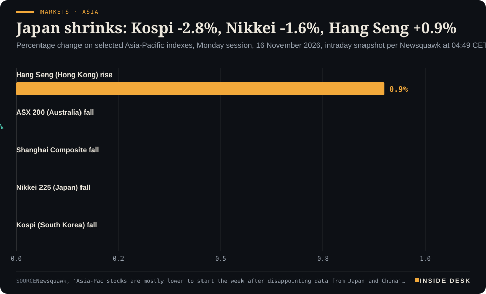
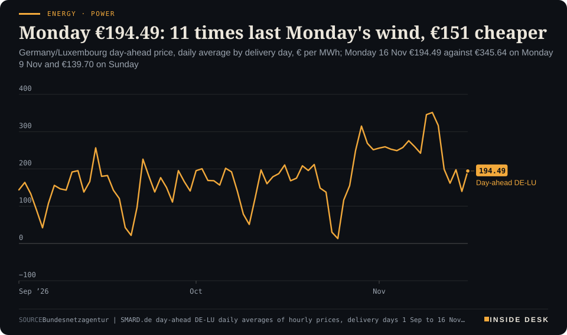
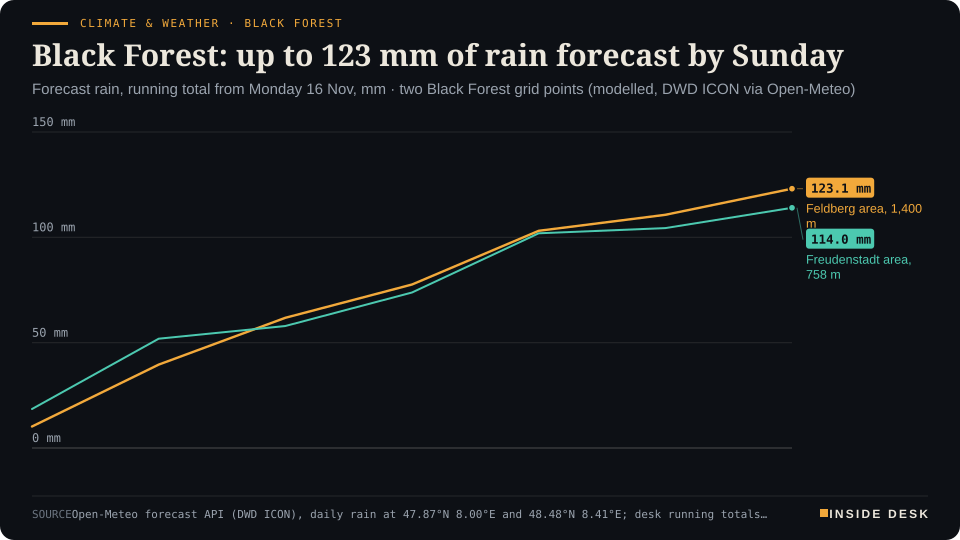

Inside Desk ePaper, Morning ePaper · Mon 16 Nov 2026
Monday, 16 November 2026Always free
Inside Desk
Morning ePaperAvailable 06:30 CET · Berlin
Lead · Security & Order
Eight suspects detained at a drone factory outside Tallinn on Saturday; by Sunday evening Estonia had a date to shut the road border. The interesting part is the paperwork behind it.
Eight suspects at a drone factory, a border due to shut in 17 days. Also: Japan shrinks by 0.1%, China's shoppers add 0.4%, Monday power at €194.49 on eleven times the wind, a measles status lost, rain for the Black Forest and a chocolate Santa 70 cents cheaper.
A night guard stopped an arson in Estonia and a government answered with a date, Japan's economy slipped by a decimal, and on Monday the timetables said more than the speeches.
Geo-economics · p. 5
Markets & Macro · p. 6
Energy & Industry · p. 11
Climate & Weather · p. 19
The day in one sentenceA night guard stopped an arson in Estonia and a government answered with a date, Japan's economy slipped by a decimal, and on Monday the timetables said more than the speeches.
ContentsInside Desk · Morning ePaper16 November 2026
Eight suspects at a drone factory, a border due to shut in 17 days. Also: Japan shrinks by 0.1%, China's shoppers add 0.4%, Monday power at €194.49 on eleven times the wind, a measles status lost, rain for the Black Forest and a chocolate Santa 70 cents cheaper.
11 edition pieces · 11 desks · Available 06:30 CET, 16 November 2026
21 ePaper extras, added , 16 November. They appear only in the ePaper and carry their own time.
The website edition follows at 08:30.
The ePaper rhythm
06:30 Morning ePaper (website edition at 08:30)
17:30 Evening ePaper, updated live until 22:30 with an “Updated” time and a Latest page
Sun 10:00 The Sunday Magazine
Berlin time. Every issue is free.
How to read it
Swipe, use the arrow keys or the page strip. Tap any headline for the reading view. Press / to search, t for contents, +/− to zoom. Download the PDF.
LeadInside Desk · Morning ePaper16 November 2026
Security & Order · Lead · 3 min
Eight suspects detained at a drone factory outside Tallinn on Saturday; by Sunday evening Estonia had a date to shut the road border. The interesting part is the paperwork behind it.
Shortly after 3am on Saturday, security staff at Threod Systems in Viimsi, just north of Tallinn, found intruders trying to break into the building. The aim, according to Estonia’s prosecutor general Astrid Asi, was to set it on fire and cause an explosion2. The company makes long-range reconnaissance and attack drones1,2. Eight people, all residents of neighbouring Latvia, were detained; five have been remanded in custody2. Estonia’s Internal Security Service, KAPO, says its intelligence shows the job was commissioned by Russia’s military intelligence agency, the GRU1,2.
By Sunday afternoon there was a policy attached. “Estonia will close all Estonian-Russian border crossing points as of 1 December,” foreign minister Margus Tsahkna wrote, citing “clear evidence” of GRU involvement2,4. The foreign ministry’s own statement is narrower and more precise: the government “plans to close its road border crossings with Russia from 1 December”3. Moscow’s first answer came via TASS, from foreign ministry spokeswoman Maria Zakharova: “We will verify all this to see if it’s true”, and if it is, it will be seen as “yet another bout of aggressive and unbridled Russophobia”4.
What actually closes. Estonia has three road crossings with Russia, at Narva, Luhamaa and Koidula, open twelve hours a day from 7am to 7pm for pedestrians and freight1. Russia itself suspended vehicle traffic through Narva in February 2024, though people could still walk across4. These are among the last overland links between the EU and Russia still operating since 20224. Railway crossings at Narva and Koidula also exist; the ministry’s wording covers roads1,3. Interior minister Igor Taro says the government will discuss in the coming days whether the closure is temporary or indefinite, and that Estonian residents and lorry drivers now in Russia have about two weeks to come home. “After that, the journey home could become long and complicated,” he said1.
Why a border, for an arson. The government’s stated logic is not punishment alone. Prime minister Kristen Michal said Russian intelligence services “exploit border crossings to exert influence over people”1. Tsahkna says the closure will “help mitigate risks related to sanctions circumvention”3. Both are claims about mechanics: who crosses, what they carry, and who recruits them on the way. They are the kind of argument a border guard can test, which is more than can be said for most statements made on a Sunday.
LeadInside Desk · Morning ePaper16 November 2026
A pattern, not a one-off. This is the second attempted arson on an Estonian defence company since August, when Tallinn-based Milrem Robotics, which supplies unmanned ground vehicles to Ukraine, was targeted; Estonia formally blamed Russian intelligence for that in September1,2. In August, too, Latvian nationals were arrested4. KAPO has warned that Russia is increasingly targeting European defence manufacturers to disrupt production and deliveries to Ukraine2. Michal called Saturday’s attempt “part of Russia’s broader hybrid war against Europe, with the aim of decreasing support to Ukraine and pressure on Russia”2.
What held. The story you can take from this weekend is less about escalation than about a guard on a night shift. “Extensive damage was averted thanks to heightened security measures and a swift reaction by law enforcement,” Michal wrote4. The suspects were detained, a prosecutor briefed journalists on Sunday, and an investigation is under way2. That is the dull machinery working: fences, alarms, shift rotas, a duty prosecutor, a court that remands. None of it makes a speech, and all of it is why the factory still stands.
The next documents. Tsahkna says he has spoken to his Latvian, Lithuanian and Finnish counterparts and informed EU colleagues, and that he will argue at Monday’s meeting of EU foreign ministers in Brussels for “tougher sanctions, a stricter visa policy, and additional measures”3. Watch for three pieces of paper: the cabinet decision that turns a post on X into a regulation, any text out of Brussels on Monday, and the charging documents for the eight suspects. Desk arithmetic: from the attempted break-in on 14 November to the announced closure date of 1 December is 17 days.
For you. If you, your family or your freight route rely on the Narva, Luhamaa or Koidula crossings, plan as though roads shut on 1 December and check the Estonian government’s formal decision before booking anything1,3. If you work at a defence supplier anywhere in Europe, the lesson from Viimsi is unglamorous: the night shift and the alarm contract are part of the defence budget too.
Geo-economicsInside Desk · Morning ePaper16 November 2026
Geo-economics · 2 min
Beijing's statisticians call the economy generally stable. The ledger shows factories selling to the world and households at home barely buying.
China’s National Bureau of Statistics published its October numbers on Monday morning, and the headline is its own: the economy was “generally stable”1. The detail is less tidy. Retail sales of consumer goods rose 0.4% from a year earlier, to 4,646.3 billion yuan1. Analysts had expected 0.8%, and September had managed 1.1%, CNBC reports2. Industrial output grew 4.8%, against forecasts of 5.3% and down from 5.5% in September1,2.
Now the other side of the ledger. Goods exports in October were worth 2,790.5 billion yuan, up 28.7% on a year earlier; imports rose 34.7%1. CNBC reports export growth of 35.2% on its measure and says the trade surplus had reached $1 trillion by October, the fastest it has ever got there2. Desk arithmetic: on the NBS yuan figures, October’s goods surplus was 712.7 billion yuan, and exports were worth about 60% of everything Chinese shops sold at retail that month.
The weakest line is investment. Fixed-asset investment for January to October fell 8.1%, real-estate development investment by 21.6%, and private investment by 11.4%1. CNBC calls the slump unprecedented outside the Covid period2. Consumer prices rose 0.7% on the year, while factory-gate prices rose 5.7% and industrial purchasing prices 7.9%1. The urban jobless rate edged down to 5.1%1.
Why it matters to you: when a large economy grows by selling abroad rather than buying at home, the adjustment lands on its trading partners. Pinpoint Asset Management’s Zhiwei Zhang told CNBC that much of the export strength rests on AI-related demand, and that the risk of a pullback “has become even more serious”2. Citi Research sees further EU trade measures on China as “plausible”2. If you buy from or sell into China, the useful numbers this autumn are not the growth rate but the gap between the factory line and the shop line. Nothing here is investment advice.
Geo-economics · Short item · ePaper extra, added
Japan's economy shrank for the first time in four quarters. Part of the reason is the price of buying energy from somewhere other than the Gulf.
Japan’s real GDP fell an annualised 0.1% in July to September, the Cabinet Office said on Monday, a quarter-on-quarter change it rounds to minus 0.0%1. It is the first contraction in four quarters3. A Reuters poll had expected annualised growth of 0.3%, and Jiji’s survey of 21 think tanks had the same median2,3. In nominal terms GDP rose 0.4%, or 1.6% annualised3.
The interesting line is trade. Imports of goods and services rose 2.5% on the quarter while exports slipped 0.2%, and net exports took 0.6 percentage points off growth1. Reuters says imports rose sharply as oil and other energy purchases recovered after Japan diversified its procurement following disruptions linked to the Middle East war2. Private consumption fell 0.3%, hit by prices and by heavy rain and typhoons; business investment rose 1.6%, helped by labour-saving and AI projects2.
Geo-economics · Brief · ePaper extra, added
Six AIS-visible commercial ships crossed the Strait of Hormuz on Sunday, three in and three out, hormuz.now’s count shows1. The biggest was the KIARA M, a San Marino-flagged very large crude carrier of 319,000 tonnes deadweight, inbound at 01:58 CET with Dubai declared as its destination1. The three outbound ships were all bulk carriers, declaring Khor Fakkan, Umm Qasr and a destination coded IRBND1. The seven-day average is 6.6 crossings a day, against a pre-crisis baseline of 84.81. Desk arithmetic: that is about 7.8% of normal. Another eight small craft crossed outside the commercial definition1. A supertanker going in is not oil coming out. It is, at least, a shipowner betting on a return trip.
Markets & MacroInside Desk · Morning ePaper16 November 2026
Markets & Macro · 2 min
Japan's economy shrank for the first time in four quarters and China's October figures missed. Asia sold its chip names and kept its consumers. The week's real exam is still on Tuesday.
Two statistics offices spoke before breakfast, and neither said what the forecasters had pencilled in. Japan’s gross domestic product fell an annualised 0.1% in July to September, against a median forecast of 0.3% growth in a Reuters poll; it is the first decline in four quarters2. China’s industrial output grew 4.8% on the year in October, against an expected 5.3%, and retail sales rose just 0.4%, against 0.8% expected3.
Markets · AsiaJapan shrinks: Kospi -2.8%, Nikkei -1.6%, Hang Seng +0.9%Percentage change on selected Asia-Pacific indexes, Monday session, 16 November 2026, intraday snapshot per Newsquawk at 04:49 CET

Bar chart of Monday 16 November 2026 percentage changes in Asia at about 04:49 CET, per Newsquawk: Hang Seng up 0.9 percent, ASX 200 down 0.1 percent, Shanghai Composite down 0.4 percent, Nikkei 225 down 1.6 percent and Kospi down 2.8 percent. These are intraday snapshot moves, not closes.
Source: Newsquawk, 'Asia-Pac stocks are mostly lower to start the week after disappointing data from Japan and China', published 16 Nov 2026, 04:49 CET; intraday snapshot, not closing levels; retrieved 16 Nov 2026 · reported figures · CSV
The tape, at about 04:49 CET. The Kospi was down 2.8%, pressed by its tech heavyweights; the Nikkei 225 was down 1.6% after wiping out early gains, with tech leading the fall; the Shanghai Composite was off 0.4% and Australia’s ASX 200 0.1%1. Hong Kong went the other way: the Hang Seng was up 0.9%, led by consumer and electric-vehicle stocks1. These are intraday snapshots, not closes.
Read the split, not the headline. On a day of weak consumer data, Hong Kong’s consumer names rose and Seoul’s chip names fell1. That is not the data talking. It is the calendar: Nvidia reports on Tuesday, and Newsquawk notes reports over the weekend that co-founder Jensen Huang was considering a return as chief executive, while Treasury Secretary Bessent said the company needs a “shake-up” with an external CEO1. A market pricing a boardroom is not pricing a GDP print.
The quarter itself was less dramatic than “shrinks”. In quarterly terms the fall was 0.02%, Reuters reports; consumption fell 0.3% and capital spending rose 1.6%2. “There is no need to be overly pessimistic about the result,” Kento Minami of Daiwa Securities told Reuters2. In Europe, Euro Stoxx 50 futures were up 0.2% before dawn1.
For you. A red Monday in Asia is a price, not a verdict. The verdicts this week come on paper: an earnings report on Tuesday, US retail sales and the Fed’s minutes4. Read those, then the mood. Nothing here is investment advice.
Markets & Macro · Brief · ePaper extra, added
Over the weekend, the Financial Times reported that ousted chief executive Jensen Huang was discussing a possible return to Nvidia, CNBC TV18 notes2. Newsquawk reports that allies in Silicon Valley were pressuring the board to reinstate him, while Treasury Secretary Bessent said the company needs a “shake-up” with an external CEO and an assessment of its compliance with US export controls1.
Futures listened to both. Nasdaq 100 contracts were up 0.5% early on, per CNBC TV182, before mostly retreating, Newsquawk reported by 04:49 CET1.
For you: on Tuesday Nvidia publishes audited numbers. Those outrank any weekend report about who sits in the chair. Nothing here is investment advice.
Politics & InstitutionsInside Desk · Morning ePaper16 November 2026
Politics & Institutions · Podium vs Print · 2 min
The SPD's parliamentary leader says the electricity-tax cut is worth about €100 a year to a family. The printed calculation agrees, and that is exactly why Tuesday is hard.
Podium
“An income-tax cut would relieve a family of four by around €600 a year, far more than a lower electricity tax, which would bring "only around €100 a year" (ZDF's paraphrase)”
Matthias Miersch, leader of the SPD parliamentary group, as reported by ZDF, Reported Sunday 15 November 2026, ahead of Tuesday's coalition committee
Print€93 a year
A three-person household using 4,000 kWh would pay about €1,282 instead of €1,375 a year; a couple using 2,800 kWh saves €65, a single person using 1,500 kWh €35; households in total about €3 billion.
Verivox analysis of the electricity tax cut to the EU minimum, Published 13 October 2026, using October 2026 average household prices
The podium. Ahead of Tuesday’s coalition committee, SPD parliamentary leader Matthias Miersch has set out a different priority from the chancellor’s. An income-tax cut, he argues, would relieve a family of four by around €600 a year, far more than a lower electricity tax, which would bring “only around €100 a year”, as ZDF reports his case1. Chancellor Friedrich Merz has promised again to cut the tax to the EU minimum of 0.1 cents per kilowatt-hour from the start of next year1.
The print. The price-comparison site Verivox did the sum in October. Household electricity averaged about 34.36 cents per kWh; the tax for households is 2.05 cents; cutting it to 0.1 cents, with the VAT that falls away too, would bring the price to about 32.04 cents2. For a three-person household using 4,000 kWh, the annual bill would fall from about €1,375 to €1,282, a saving of €932. A couple using 2,800 kWh would save €65 and a single person on 1,500 kWh €35; across all households, about €3 billion2. The federal government would forgo about €5.4 billion a year in tax, a figure not yet in the 2027 budget3.
The gap. On the household bill, there is hardly one: Miersch’s €100 is a fair rounding of Verivox’s €93, and Verivox counts three people, not four1,2. The gap is elsewhere. ZDF points out that the SPD’s comparison leaves out the lower power costs for shops, services and restaurants1. Desk arithmetic: Verivox’s €3 billion for households, which includes the saved VAT, against €5.4 billion in forgone tax shows that a large share of the cut lands outside the family budget, though the two figures are not measured the same way2,3. Finance minister Lars Klingbeil says he is open to the cut if it is paid for: “We can’t just widen the gaps for the coming years by five billion”3.
For you. If you use about 4,000 kWh a year, the cut is worth roughly €93 to you, or about 7% of your bill, on October prices2. …
Politics & Institutions · Short item · ePaper extra, added
Before Tuesday's coalition committee, the SPD leader points not at the electricity tax but at two health measures still waiting for a draft.
SPD leader and finance minister Lars Klingbeil used a members’ dialogue with around 120 Brandenburg Social Democrats in Potsdam on Saturday to put a date on his impatience1. “When I look at 1 July and ask what we actually decided there, we could use a bit more speed,” he told journalists afterwards1.
He named two items: the Healthy Heart Act, for more prevention of cardiovascular disease, and an appointment guarantee for specialists for patients with statutory insurance1. Both, he said, were agreed in the coalition committee on 1 July, “and the health minister has not yet presented anything”1. The health minister is Carsten Linnemann of the CDU, in office since 29 July, when he succeeded Nina Warken; the Healthy Heart Act had already been approved by the previous coalition’s cabinet in 2024, dpa notes1. Klingbeil added that he does not blame Linnemann, but wants a “high pace of reform”1.
Politics & InstitutionsInside Desk · Morning ePaper16 November 2026
The coalition committee of CDU, CSU and SPD meets on Tuesday, with the €5.4 billion electricity-tax cut still unfunded in the €560.9 billion draft budget for 20271. If the leaders agree, ZDF lays out the only route: an amendment from the coalition groups during the second reading of the departmental budgets between 24 and 26 November, with the general debate on the chancellor’s budget on 25 November and the third reading and final vote on Friday 27 November1. The funding ideas on the table are not new: surpluses on the EEG account, shifts in the Climate and Transformation Fund, more subsidy cuts, and from Bremen’s mayor Andreas Bovenschulte a windfall, plastics or sugar tax1. Bavaria’s CSU social minister Ulrike Scharf called a CDU idea to drop the extended mothers’ pension instead “shabby”1. Timetables are where promises meet procedure; this one is short.
Psychology & BehaviourInside Desk · Morning ePaper16 November 2026
Psychology & Behaviour · 2 min
A benchmark of language tools for psychosis found that the humblest measure, how much a person says, was among the hardest to beat. The paper's own caveats are the more useful lesson.
The Annex reads the paper behind the headline. This week’s headline, written up on Saturday, says simple word counts beat complex AI tools at spotting psychosis in speech1. The paper, published in npj Digital Medicine in August, says something narrower and more useful2.
Clause one: the test. The team benchmarked 51 natural language processing metrics, the computer techniques used to analyse speech, on two datasets2. The German sample had 59 people with schizophrenia or schizoaffective disorder and 20 controls; the Russian sample had 31 people with those diagnoses, 30 controls and 18 people with mainly depressive affective disorders2. Desk arithmetic: 158 participants in all. Each completed speech tasks such as describing picture stories and recounting personal memories, and each metric was judged on two things: how well it tracked symptom severity, and how well it separated psychosis from healthy controls1,2.
Clause two: the result. Verbosity, meaning word count, sentence count and mean sentence length, outperformed most of the sophisticated metrics across tasks and languages2. People with more severe symptoms tended to say less, consistent with the long-known poverty of speech in psychosis1. Only a handful of advanced measures, including speech-graph metrics, edged past the best simple baseline, and only in the German data; in the Russian data nothing beat it1,2.
Clause three: the size of it. The strongest German baseline, mean sentence length, correlated with symptom severity at r = −0.282. Desk arithmetic: squared, that is about 8% of the variation in symptoms. Real, and modest. No metric here reads a diagnosis from a recording.
Clause four: the small print. The best metrics were not specific to psychosis: what separated psychosis from healthy controls did much the same for depression, which suggests they may pick up general distress1. The samples were small, the tasks differed between languages, and the authors call the work exploratory and warn of the risks of wrongly predicting psychiatric symptoms1.
Psychology & Behaviour · Short item · ePaper extra, added
A Polish survey links feeling humiliated with lower happiness, partly through repetitive negative thinking. It is a snapshot, not a mechanism, and the authors say so.
Researchers from SWPS University in Katowice and the University of Silesia surveyed 323 adults in Poland online: 212 women, 107 men and four of another gender, aged 18 to 79 with an average age of 261. The paper appears in Current Issues in Personality Psychology1.
They measured two sides of humiliation: memories of having been humiliated and fear of being humiliated in future1. People who reported more of either tended to be less happy and more prone to rumination, and fear of future humiliation was slightly more strongly linked to lower happiness than the memories were1.
Rumination “partially mediated” the link: more humiliation went with more repetitive negative thinking, which went with lower happiness1. But that route explained only part of it. Humiliation stayed strongly linked to lower happiness even after rumination was accounted for1. Those who saw their own repetitive thinking as unproductive were the least happy1.
The caveats are the usual ones, and they matter. All measures were taken at one point in time, so the study cannot show that humiliation causes rumination, which then lowers happiness1. It relies on self-report, and the sample, recruited through social media, was mostly young and female1.
The useful takeaway is modest. The fear of the next humiliation seems to weigh at least as much as the last one. That is worth knowing when you find yourself replaying a meeting at 3am: the replay is a habit you can name, and naming it is where most help starts.
Psychology & BehaviourInside Desk · Morning ePaper16 November 2026
For 14 nights, 106 cohabiting US couples separately rated whether they had helped or hindered each other’s goals that day, giving 2,377 daily reports, according to a study in the Journal of Social and Personal Relationships1. People tracked their impact reasonably well, and were on average accurate about how helpful they were1. But they tended to underestimate how much they obstructed their partner1. That optimism was not harmless: when people underestimated their obstruction, both partners felt less close, and the partner was less satisfied1. The sample was predominantly White and recruited online, and without observers it is hard to say who misjudged1. The cheap fix is old: ask, tonight, what made your partner’s day harder.
Energy & IndustryInside Desk · Morning ePaper16 November 2026
Energy & Industry · 2 min
Monday's power was bought on Sunday at €194.49 a megawatt hour. That is dearer than Sunday, and far cheaper than a week ago, when the turbines stood almost still. The weekday came back; the wind stayed.
Monday’s electricity was bought on Sunday, and the auction has set the price: delivery in Germany and Luxembourg will average €194.49 per megawatt hour1. Desk arithmetic: that is €54.79 dearer than Sunday’s €139.70, the week’s cheapest day1. It is also €151.15, or about 44%, cheaper than last Monday, 9 November, at €345.641. Which of those two comparisons you hear first tells you more about the speaker than about the market.
Energy · PowerMonday €194.49: 11 times last Monday's wind, €151 cheaperGermany/Luxembourg day-ahead price, daily average by delivery day, € per MWh; Monday 16 Nov €194.49 against €345.64 on Monday 9 Nov and €139.70 on Sunday

Line chart of the daily average German-Luxembourg day-ahead electricity price from 1 September to 16 November 2026, in euros per megawatt hour. The previous week runs from €345.64 on Monday 9 November and a record €351.48 on Tuesday 10 November down to €139.70 on Sunday 15 November. The latest value is €194.49 for delivery on Monday 16 November, €54.79 above Sunday and €151.15 below the previous Monday.
Source: Bundesnetzagentur | SMARD.de day-ahead DE-LU daily averages of hourly prices, delivery days 1 Sep to 16 Nov 2026 (Monday 16 Nov €194.49, auction of 15 Nov), retrieved 16 Nov 2026, 05:27 CET · CC BY 4.0 · CSV
The wind explains the week, not the day. SMARD’s forecast for Monday is about 775.7 GWh of onshore wind and 119.8 GWh offshore2. Desk arithmetic: some 895.5 GWh together. …
Energy & Industry · Short item · ePaper extra, added
Oil eased in early Asian trade on Monday as Gulf shipments recover and the energy watchdog's surplus call sinks in. A mine east of Hormuz is a reminder that the floor is still made of freight rates.
Brent crude was down 47 cents, or 0.49%, at $95.37 a barrel by 02:45 CET on Monday, and US WTI was 23 cents lower at $88.33, Reuters reported1.
The reason is a word the market had not used since the war with Iran began. “For the first time since the US-Iran conflict began, traders are actively contemplating the possibility of excess supply rather than persistent tightness,” said Tim Waterer of KCM Trade1. The International Energy Agency said on Friday that supply will average 105 million barrels a day in the fourth quarter, 1.7 million more than forecast demand; it had previously expected a deficit1. The agency added that 71 million barrels from members’ emergency stocks, including 15 million barrels of diesel, will be released by the end of February1.
Washington helped at the margin: President Trump extended a waiver of the Jones Act for 90 days, letting foreign-flagged tankers carry fuel between US ports1.
The floor is freight. Waterer noted shipping rates remain high because of the risks in the Strait of Hormuz1. On Sunday night Iran’s navy said a tanker caught fire after striking a naval mine east of the Strait, a report Reuters could not independently verify1. CNBC TV18 noted “fresh attacks in West Asia” as a reason the physical market may stay volatile2.
For you: a surplus forecast is not yet a cheaper tank. Watch the barrels arrive, not the adjectives. Nothing here is investment advice.
Energy & IndustryInside Desk · Morning ePaper16 November 2026
Energy & Industry · Brief · ePaper extra, added
JKM, the Asian liquefied natural gas benchmark, rose 5.91% to $31.35 per million British thermal units in data stamped 01:09 CET on Monday, EnergyReader reports1. Europe’s TTF front-month stood at €90.86 per megawatt hour in data stamped 21:05 CET on Sunday, with Germany’s THE month-ahead at €92.331.
Analysts told Montel on Friday that trade through the Strait of Hormuz will probably struggle to return to normal even if the US and Iran agree a peace deal, because shipowners’ and insurers’ judgments on security would still govern how quickly vessels return1. The next signal, EnergyReader writes, is whether the JKM jump extends into TTF1.
For you: Europe’s gas storage and contracts set your winter bill, not a single overnight print. Nothing here is investment advice.
Money, FX & CommitteesInside Desk · Morning ePaper16 November 2026
Money, FX & Committees · 2 min
Japan's output barely slipped last quarter. Its real income fell faster, because the oil it imports got dearer. That is the gap a family feels before any statistician does.
Japan’s Cabinet Office published its first estimate of the third quarter on Monday. Real GDP was flat to the first decimal, -0.0% on the quarter, or -0.1% annualised1. Headlines say “shrinks”. The more telling line sits further down the same table: real gross domestic income fell 0.4% on the quarter, -1.6% annualised1.
Why income fell faster than output. Imports of goods and services rose 2.5% in real terms in the quarter, and net exports took 0.6 percentage points off growth1. Reuters reports that imports rose sharply as oil and other energy purchases recovered after Japan diversified its suppliers following the disruption linked to the war in the Middle East2. Income can fall faster than output when what a country buys abroad gets dearer relative to what it sells. Desk arithmetic: the gap between -0.0% for output and -0.4% for income is 0.4 points in one quarter. The table does not label the cause; with energy imports as costly as Reuters describes, the oil bill is the obvious place to look.
The till noticed. Household consumption fell 0.3% on the quarter, -1.3% annualised1. Reuters puts it down to persistent price pressures and poor weather, with typhoons and heavy rain hurting spending, and to demand for cars and air conditioners fading after a temporary boost in the previous quarter2. “Higher prices linked to Middle East tensions will continue to squeeze household purchasing power,” said Masato Koike of Sompo Institute Plus2.
Firms are not waiting. Business investment rose 1.6%, backed by labour-saving technology and AI projects, according to Reuters1,2. The Bank of Japan raised rates in June and September, and many analysts expect another rise as soon as December2. The yen traded at about 159.67 per dollar on Monday morning3.
For you. The lesson travels well. If your wages rise but your energy bill rises faster, your own little GDP can be flat while your income falls. The statistic that matters at home is not what you earn, but what it buys. Nothing here is investment advice.
Money, FX & Committees · Short item · ePaper extra, added
Gold edged up on Monday after its lowest level in more than a year. The reason it fell is the same reason your savings account pays more: interest.
Spot gold was up 0.3% at $3,892.42 an ounce at 01:50 CET on Monday, and December futures were up 0.2% at $3,895.60, Reuters reported1. That came after a 4.5% fall last week that took bullion to its lowest in more than a year1.
The cause is plain arithmetic about interest. US producer prices posted their biggest annual rise in four years in October, and markets put a 94% chance on a quarter-point Federal Reserve rise in December, according to CME’s FedWatch tool1. Kansas City Fed President Jeff Schmid said on Sunday that inflation was still “running too hot”1. Gold pays no interest, so every rise in rates makes holding it a little dearer in lost income1.
Money, FX & Committees · Brief · ePaper extra, added
Most economists polled by Reuters expect the European Central Bank to make its final deposit-rate rise of this cycle next month, though more than a third expect another in early 2027, FXStreet reports1. The euro still drifted to about $1.1025 in early Asian trade on Monday1.
The reason is across the Atlantic. Markets price a 93.5% chance of a quarter-point Fed rise at its 8–9 December meeting, with another expected in January1. ING says short-dated swap differentials are at their widest of the year and that “a break below 1.10 is not a given, but that level is certainly at risk into year-end”1.
Desk arithmetic: at $1.1025, €1,000 buys about $1,102.50. Nothing here is investment advice.
Ordinary & Inherited LifeInside Desk · Morning ePaper16 November 2026
Ordinary & Inherited Life · 2 min
For once the Christmas sweets shelf is getting cheaper. Mostly at the bottom, and only if you read the price per kilo.
The ledger has a rare entry this week: a festive price that fell. The 110-gram own-brand chocolate Santa at Germany’s big grocers costs €0.99 this year, down from €1.69, according to a survey by the shopping app MarkenDetektive for dpa1. Desk arithmetic: 70 cents, or about 41% off.
It is not alone. All five own-brand products in the survey cost less than last year, by 21.4% on average and by up to 41% in single cases1. Dominosteine, filled gingerbread hearts and chocolate Lebkuchen were all cheaper1. The survey used the dominant shelf prices of 16 Christmas items at Rewe, Edeka, Aldi and Lidl, without special offers1. Experts cited by dpa put it down to the cocoa market easing, with larger volumes exported again1.
The brands are another shelf. On average, branded Christmas sweets cost about the same as last year, with some up and some down1. Milka’s 90-gram Santa went from €2.99 to €3.29; the Kinder Santa rose 30 cents and Duplo’s 10 cents1. Lindt’s 70-gram Santa went the other way: €3.49, 50 cents cheaper1.
Read the small label. “Per kilo, a branded Santa costs up to five and a half times as much as the own brand,” says Patrick Sieber of MarkenDetektive1. Desk arithmetic: €0.99 for 110 grams is €9.00 a kilo; Milka at €3.29 for 90 grams is about €36.56; Lindt at €3.49 for 70 grams is about €49.86, which is where the five and a half comes from. The shelf label’s unit price, required by law, does this sum for you.
And keep the year in view. Cheaper is not cheap. The own-brand chocolate lolly falls from €2.49 to €1.69, about a third less, and still costs 42% more than in 20221. A price that comes down a step after climbing a flight is still on the second floor. Buy the Santa you like; just let the kilo price, not the wrapper, make the first offer.
Ordinary & Inherited Life · Short item · ePaper extra, added
A new survey asks working adults how long their savings would cover the bills. The answers are a reason to start small, not to despair.
If your pay stopped tomorrow, how long would your savings cover the bills? For 22% of working adults in Germany, less than four weeks, according to a representative Civey survey for the insurer Debeka, reported by Südwest Presse1. About half could cover their running costs for three months at most; only 23% would last more than six months1. Almost twice as many women as men said their household would last less than a month1.
Ordinary & Inherited Life · Brief · ePaper extra, added
By Verivox’s count, 58 default electricity suppliers have announced higher prices for 1 January, by 8% on average, the Berliner Zeitung reports, citing the trade magazine ZfK1. For a household using 4,000 kWh that is about €117 a year more1. Rises run from just over 2 to 5.5 cents per kWh, and the main driver is the wholesale market, not grid fees1. Default suppliers must announce by Friday 20 November1. In the default tariff you can leave at any time with two weeks’ notice; on other contracts, a price rise lets you cancel without notice to the day it takes effect1. Read your meter on 31 December and photograph it1. Compare in the second year’s terms, without the welcome bonus1.
Tech & ComputeInside Desk · Morning ePaper16 November 2026
Tech & Compute · 2 min
America's sky did not stop because of a hacker or an AI. It stopped because a box at a remote radio site started shouting, and the network had no way to tell it to be quiet.
On Friday at about 15:30 Eastern time, 21:30 in Berlin, the US Federal Aviation Administration ordered every departure in the country to stay on the ground1. Traffic resumed at 20:15 Eastern, 02:15 CET on Saturday1. Desk arithmetic: four hours and 45 minutes. In that window about 3,500 aircraft already airborne landed safely, and by the FAA’s count operators cancelled about 12,462 flights that day, not all of them because of the stop1.
The cause, as the FAA now tells it, is gloriously dull. Its legacy equipment became unstable when data flooded the FAA’s telecoms network “at a rate of 1,000 connection attempts every 4 to 5 seconds”1. Investigators point to two sites: a radar site in Amarillo, Texas, and a radio site in El Dorado, Arkansas, where the contractor L3Harris had been deploying a new router while swapping old copper lines for fibre1,3. Instability spread to 17 of the FAA’s 22 en-route control centres1. L3Harris blocked the two locations and the network calmed; the broadcast function was then switched off on roughly 60 similar routers1.
Not the clever failure. No cyber-attack, says the FAA, and no link to its new SMART planning system1. The fault sat in the seam between old and new: a time-division network that could not cope with a modern box behaving badly. L3Harris says more than 70% of the planned copper-to-fibre conversion is done2. Transportation Secretary Sean Duffy says such work has been done thousands of times and that remote sites were worked on in daylight “because the risk, historically, has been very low”3. Whether the router or the installer was at fault is still open2,3.
The useful part for you. Every organisation is running a copper-to-fibre migration of some kind: an old phone system, a legacy accounting server, a site nobody visits. The lessons the FAA itself lists are the boring ones. Do changes when traffic is low, even at small sites1. …
Tech & Compute · Short item · ePaper extra, added
The world's chip foundry wants to fund the customers it does not have yet. The interesting clause is the one about the companies that sell to it.
TSMC is setting up a venture fund of NT$16.45 billion, about $500 million, to back chip startups that could grow into the next Nvidia, a senior executive told Nikkei Asia, as reported by Taiwan News1.
The argument is a memory of its own order book. “When Nvidia started working with us, Nvidia was a startup,” said Kevin Zhang, TSMC’s deputy co-chief operating officer. “We not only support today’s Nvidia, but we also want to support the future’s Nvidia”1.
This is not TSMC’s first go. In 2021 it set up an emerging fund of about NT$6.57 billion to give startups access to its advanced manufacturing, and Zhang called the returns “exceptional”1. Desk arithmetic: the new fund is about 2.5 times that size.
The new clause is the one worth reading twice. The fund could back the kinds of companies TSMC has never invested in: its own suppliers and partners, such as providers of chip-design intellectual property1. It follows TSMC’s move to invest up to NT$32.87 billion in Anthropic and OpenAI, and Zhang describes the aim as a “reinforcing loop” for the wider ecosystem1.
A loop is a fine thing when demand is rising. It is worth remembering that it turns both ways: a foundry that funds its customers and its suppliers is also more exposed when either has a bad year. For now, the plainest reading is the most reassuring one. In a week dominated by who leads one chip company, the company that manufactures for nearly all of them is spending on the pipeline, not the headlines.
Tech & ComputeInside Desk · Morning ePaper16 November 2026
Tech & Compute · Brief · ePaper extra, added
Tesla has posted the “Cybercab Autonomy Subscription Agreement” for the two-seater it has started offering to select customers at $29,990 plus a mandatory $299 a month, Electrek reports1. The key line: “Your Cybercab will not operate without an active Autonomy Subscription”1. Tesla can change that price with a month’s notice, and the car works only inside Tesla’s Robotaxi geofences, which Tesla “may expand, reduce, relocate, or otherwise modify” at any time1. Use is personal only, so no ride-hailing income without Tesla’s written authorisation, and cabin-camera data is kept for 30 days by default1. Desk arithmetic: $299 a month is $3,588 a year; Electrek puts five years at $47,631 before insurance and charging1. The contract is the product. Read it as you would a lease.
Health & CareInside Desk · Morning ePaper16 November 2026
Health & Care · 2 min
A quarter-century achievement ends not with a bang but with a calendar: an outbreak that did not stop within a year. The remedy is the same unglamorous one as in 2000.
The United States has lost its status as a country where measles is eliminated, KFF Health News reports, citing researchers with direct knowledge of the deliberations: the Pan American Health Organization concluded last week that measles has re-established regular transmission there1. The status was secured in 20001. PAHO had planned to announce it publicly on 17 November1.
The rule behind the verdict is a dull one, and that is its strength. Elimination does not mean no cases; it means outbreaks end within a year1. An outbreak in Utah passed the one-year mark in June1. PAHO based its assessment on two analyses, one by the CDC and one by an independent group of measles experts1.
The ledger is long. In the past two years more than 830 people have been admitted to hospital with measles in the US, more than 8,000 have fallen ill in outbreaks that cost roughly $125 million in care, public-health response and lost productivity, according to Johns Hopkins researchers, and states have reported 13 measles-associated deaths, among them infants too young to be vaccinated1. Only 3% of more than 7,600 cases confirmed since January 2025 were in vaccinated people1.
The arguments over blame are loud: a spokesperson for the US health department, HHS, pointed to vaccination gaps that opened before this administration, while many scientists quoted by KFF criticise the federal response and messaging1. The arithmetic is quieter. Two doses of the MMR vaccine prevent about 97% of infections, and with at least 95% of a community immunised, outbreaks peter out1.
The way back is also written down: current outbreaks must end, and future ones must stop within a year1. “Bigger fires create more embers,” said Paul Rota, a former CDC microbiologist1. For you, the useful document is not a press release; it is the vaccination booklet in the drawer, and whether it shows two entries.
Health & Care · Short item · ePaper extra, added
America's regulator adds a rare optic-nerve risk to Ozempic, Wegovy, Mounjaro and the rest. Europe put it in its leaflets last year.
The US Food and Drug Administration has told makers of Ozempic, Wegovy, Mounjaro, Zepbound and every other GLP-1 drug sold in the country to add language on a possible increased risk of non-arteritic anterior ischaemic optic neuropathy, NAION, Complex reports, citing CNN1. The rare condition cuts blood flow to the optic nerve, can strike without pain and can leave permanent loss of sight; the warning goes into the labels’ “Warnings and Precautions” section1.
The numbers are small, and the FDA says so. An analysis of 126 controlled trials found 10 probable NAION cases among GLP-1 users and five among those on placebo: 6.4 cases per 100,000 person-years against 3.81. Cases have been reported with every GLP-1 on the US market, but the agency found no biological mechanism1. Novo Nordisk says the data “do not establish a cause-and-effect relationship”; Eli Lilly says it is evaluating the update1.
Health & Care · Brief · ePaper extra, added
For the first time since 2010 the American Cancer Society has updated its prostate cancer guideline, and it now makes a direct recommendation: a PSA-based test every two years for average-risk men aged 50 to 691. Black men and men with a strong family history should be tested every year from 451. The old guideline asked mostly for shared decision-making1. The safeguards are part of the package: an elevated PSA should be repeated within two weeks to three months, then followed by MRI or a validated biomarker before any biopsy, and low-risk cancers should be offered active surveillance first1. No screening is recommended from 80, or for men not expected to live another ten years1. The society estimates 333,830 US diagnoses and 36,320 deaths this year1.
A blood test is only the first form in a longer file. The guideline’s real work is in the follow-up steps.
Security & OrderInside Desk · Morning ePaper16 November 2026
Security & Order · Short item · ePaper extra, added
132 drones overnight, 106 shot down, 41,000 families in Odesa Oblast without power for a time, and a dispute over a satellite terminal's speed setting.
Russia launched 132 long-range attack drones at Ukraine overnight into Sunday, 78 of them jet-powered, Ukraine’s Air Force said; 106 were intercepted, including 61 of the jet-powered ones, and impacts were recorded at 20 locations1. One strike hit a DTEK energy facility in Odesa Oblast, leaving about 41,000 families temporarily without power, according to governor Oleh Kiper1,2. Desk arithmetic: 26 drones got through, about one in five.
President Volodymyr Zelensky says part of the reason is a setting, not a missile. Speed restrictions on Starshield, the military version of Starlink, cap terminals at 161 kilometres per hour (100 mph) along the front and over occupied territory, the Kyiv Independent reports, which hampers the interceptor drones that usually meet jet-powered Shaheds before they reach government-controlled areas1. “Many of these strikes get through precisely because speed restrictions remain in place,” he wrote1. Starlink has denied restricting speeds, and Elon Musk said last month that the US government controls Starshield, Al Jazeera notes2. Zelensky has told his foreign and defence ministries to work with US officials and SpaceX on a fix1.
Zelensky’s weekly count: more than 2,300 attack drones, 1,590 glide bombs and 15 missiles1. The front line now runs through a terms-of-service page as well as a field. Who signs that page, and when it changes, is the question for this week.
Security & Order · Brief · ePaper extra, added
Iran’s Revolutionary Guards said on Sunday that two oil tankers on an “unauthorised route” in the southern Strait of Hormuz struck naval mines, and that one, a supertanker “carrying over two million barrels of crude oil”, sank1. They gave no names and no flags, and there was no independent confirmation1. The UK’s maritime monitor UKMTO said it was aware of an Indian report of an attack on a tanker in the Gulf, unclear whether the same incident; damage was unknown and the crew were safe1. The US military says it has cleared mines from the main routes1. On the same day the AIS counters saw six commercial crossings, two of them tankers2. Until a ship has a name, a claim is a press release. Watch for an insurer’s notice or a port’s list, not a broadcast.
Climate & WeatherInside Desk · Morning ePaper16 November 2026
Climate & Weather · 2 min
No winter, no snow in the lowlands. Instead the weather service issues the duller warning: continuous rain on the western slopes, storm-force gusts on the ridges, and the Black Forest at the top of the list.
The weather service’s weekly hazard outlook, issued at 05:00 CET, starts with a sentence that will not trend: from Tuesday, a spell of continuous rain sets in on several west-facing upland slopes, with the southern half of the country at times stormy1. In the Black Forest the Deutscher Wetterdienst expects “unwetterartige” amounts, severe-weather levels of rain1.
The figures are specific. On Wednesday and Thursday, 25 to 35 litres per square metre in 24 hours are possible, though rated unlikely, on some western upland slopes; in the Black Forest severe weather is rated likely, with 30 to 40 litres in 24 hours possible1. On the ridges of the uplands and the Alps, gusts of force 9 to 10 are likely from the south-west, and isolated hurricane-force gusts of force 11 are not ruled out1. The rain eases only slowly from the north towards Saturday1.
Climate & Weather · Short item · ePaper extra, added
An atmospheric river brings the season's first strong Pacific storm. The forecasters' most interesting word is not 'flood' but 'beneficial'.
A series of Pacific storms, fed by an atmospheric river, is moving through the American West and will keep doing so well into this week, The Weather Channel reports1. Its forecasters expect 3 to 6 inches of rain in southern Oregon, far northern California, the northern Sierra Nevada foothills and Washington’s Olympic Peninsula, and more than an inch from the Bay Area to western Washington and Oregon1.
The headline hazard is at the coast. Waves of 15 to 25 feet are expected, breaking up to 35 feet at favoured spots, highest from northern California to Oregon1. The National Weather Service in Portland warns that logs carried by cresting waves have killed and seriously injured people on beaches before1. High tides on top of the swell could bring several feet of coastal flooding during each storm1.
Inland, the southern Sierra Nevada could see 1 to 2 feet of snow by the end of Monday, and more than 2 feet by the end of the week, with very difficult travel through the passes1.
And then the sentence worth keeping: because this is the first stronger system of the season, flooding is not expected and the rain will “largely be beneficial”1. The forecasters add the caveat themselves. Later storms, falling on softened soils and on wildfire burn scars, raise the risk of mudslides and debris flows1.
The first storm refills. The third one tests the drains. The work in between is clearing them.
Climate & Weather · Brief · ePaper extra, added
COP31 in Antalya enters its decisive second week as ministers arrive; Germany’s environment minister Carsten Schneider is to co-lead the talks on emissions cuts with India’s Bhupender Yadav, tagesschau reports1. The Turkish summit chief Murat Kurum wants the closing declaration to rally countries behind a global electricity target, ideally a concrete number: 35% electrification by 20351. How many states back it, Turkey has not yet said, and Saudi Arabia and Russia are sceptical1. Money remains the glue: developing countries, above all in Africa, want clarity on adaptation finance after last year’s pledge to triple it left the base year open1.
A target with a number can be counted. That is why it is hard to agree, and why it is worth agreeing.
Charts and dataInside Desk · Morning ePaper16 November 2026
Charts and data
Energy · PowerMonday €194.49: 11 times last Monday's wind, €151 cheaperGermany/Luxembourg day-ahead price, daily average by delivery day, € per MWh; Monday 16 Nov €194.49 against €345.64 on Monday 9 Nov and €139.70 on Sunday
Line chart of the daily average German-Luxembourg day-ahead electricity price from 1 September to 16 November 2026, in euros per megawatt hour. The previous week runs from €345.64 on Monday 9 November and a record €351.48 on Tuesday 10 November down to €139.70 on Sunday 15 November. The latest value is €194.49 for delivery on Monday 16 November, €54.79 above Sunday and €151.15 below the previous Monday.
Source: Bundesnetzagentur | SMARD.de day-ahead DE-LU daily averages of hourly prices, delivery days 1 Sep to 16 Nov 2026 (Monday 16 Nov €194.49, auction of 15 Nov), retrieved 16 Nov 2026, 05:27 CET · CC BY 4.0 · CSV
Climate & Weather · Black ForestBlack Forest: up to 123 mm of rain forecast by SundayForecast rain, running total from Monday 16 Nov, mm · two Black Forest grid points (modelled, DWD ICON via Open-Meteo)

Line chart of forecast rainfall at two Black Forest grid points, running total from Monday 16 November 2026. The Feldberg-area point rises from 10.2 mm on Monday to 61.8 mm by Wednesday and 123.1 mm by Sunday 22 November, the latest value. The Freudenstadt-area point rises from 18.5 mm on Monday to 51.9 mm on Tuesday and 114.0 mm by Sunday. These are model forecasts retrieved at 05:25 CET, not measurements.
Source: Open-Meteo forecast API (DWD ICON), daily rain at 47.87°N 8.00°E and 48.48°N 8.41°E; desk running totals; retrieved 16 Nov 2026, 05:25 CET · CC BY 4.0. Forecast, not observed. · CSV
Latest values
Series
Value
Date
Chart
Day-ahead DE-LU
194.49
16 Nov 2026
Monday €194.49: 11 times last Monday's wind, €151 cheaper
Feldberg area, 1,400 m
123.1 mm
22 Nov 2026
Black Forest: up to 123 mm of rain forecast by Sunday
Freudenstadt area, 758 m
114.0 mm
22 Nov 2026
Black Forest: up to 123 mm of rain forecast by Sunday
Last data point of each series in the charts above, from the Inside Desk data archive. Sources under each chart.
Back pageInside Desk · Morning ePaper16 November 2026
Before you close the tab
The day in one sentence
A night guard stopped an arson in Estonia and a government answered with a date, Japan's economy slipped by a decimal, and on Monday the timetables said more than the speeches.
One thing you can do this week
This week, when the November payslip arrives, find the line for health insurance and read it once, slowly: the percentage, the euro amount, the name of your insurer. Then put the payslip in the same folder as last month's. When your insurer's letter about next year comes, you will have the number it is talking about in front of you.
A habit, not advice.
What went right
Green turtle nesting at the Turtle Islands in Sabah, Malaysia, has tripled since the 1970s to more than 20,000 nests a year, AFP reports 1. The islands have been protected since 1977, and Sabah banned turtle meat and egg consumption in 1997 1. On Omadal island a 20-strong women's cooperative has moved eggs to a hatchery since 2012 and now funds the work itself, putting 10% of its handicraft and catering revenue into turtle protection 1. Globally, green turtles have moved from endangered to "least concern" 1. "I've done my part," said the turtle scientist Juanita Joseph 1. Fifty years of fences, bans and buckets of sand do not make headlines; they make nests.
In euros at home
The average additional contribution to Germany's statutory health insurance for 2027 stays at 2.9%, the health ministry announced on 30 October; with the general rate of 14.6% that makes a notional total of 17.5%, shared equally by employee and employer 2. On a gross monthly salary of €4,000 subject to contributions, the 2.9% means €58 a month each for employee and employer 2. But the figure is a benchmark, not a price: insurers set their own rates, and the average actually charged in 2026 is about 3.13%, according to the GKV-Spitzenverband 2. Desk arithmetic: on €4,000 a month, the gap between 3.13% and 2.9% is €9.20 a month, of which your half is €4.60, or €55.20 a year.
Figures as reported by krankenkasseninfo.de on 2 Nov 2026; your insurer's own rate for 2027 decides what applies to you. Nothing here is advice.
Small words
Zusatzbeitrag (additional contribution)
The part of the statutory health insurance rate that each insurer sets for itself on top of the general 14.6%; the ministry publishes an average each autumn as a benchmark, and the insurers decide their own figure 2.
Commentary for information only. Not investment, legal, tax, medical or political advice. Inside Desk is free and reader-supported. Every number is sourced in the piece it appears in.
This issue has been updated.
All articles in this edition
Security & Order · 3 min read
Three crossings, one drone maker, 1 December: Estonia sends Moscow the bill for a failed arson
Eight suspects detained at a drone factory outside Tallinn on Saturday; by Sunday evening Estonia had a date to shut the road border. The interesting part is the paperwork behind it.
Shortly after 3am on Saturday, security staff at Threod Systems in Viimsi, just north of Tallinn, found intruders trying to break into the building. The aim, according to Estonia’s prosecutor general Astrid Asi, was to set it on fire and cause an explosion2. The company makes long-range reconnaissance and attack drones1,2. Eight people, all residents of neighbouring Latvia, were detained; five have been remanded in custody2. Estonia’s Internal Security Service, KAPO, says its intelligence shows the job was commissioned by Russia’s military intelligence agency, the GRU1,2.
By Sunday afternoon there was a policy attached. “Estonia will close all Estonian-Russian border crossing points as of 1 December,” foreign minister Margus Tsahkna wrote, citing “clear evidence” of GRU involvement2,4. The foreign ministry’s own statement is narrower and more precise: the government “plans to close its road border crossings with Russia from 1 December”3. Moscow’s first answer came via TASS, from foreign ministry spokeswoman Maria Zakharova: “We will verify all this to see if it’s true”, and if it is, it will be seen as “yet another bout of aggressive and unbridled Russophobia”4.
What actually closes. Estonia has three road crossings with Russia, at Narva, Luhamaa and Koidula, open twelve hours a day from 7am to 7pm for pedestrians and freight1. Russia itself suspended vehicle traffic through Narva in February 2024, though people could still walk across4. These are among the last overland links between the EU and Russia still operating since 20224. Railway crossings at Narva and Koidula also exist; the ministry’s wording covers roads1,3. Interior minister Igor Taro says the government will discuss in the coming days whether the closure is temporary or indefinite, and that Estonian residents and lorry drivers now in Russia have about two weeks to come home. “After that, the journey home could become long and complicated,” he said1.
Why a border, for an arson. The government’s stated logic is not punishment alone. Prime minister Kristen Michal said Russian intelligence services “exploit border crossings to exert influence over people”1. Tsahkna says the closure will “help mitigate risks related to sanctions circumvention”3. Both are claims about mechanics: who crosses, what they carry, and who recruits them on the way. They are the kind of argument a border guard can test, which is more than can be said for most statements made on a Sunday.
A pattern, not a one-off. This is the second attempted arson on an Estonian defence company since August, when Tallinn-based Milrem Robotics, which supplies unmanned ground vehicles to Ukraine, was targeted; Estonia formally blamed Russian intelligence for that in September1,2. In August, too, Latvian nationals were arrested4. KAPO has warned that Russia is increasingly targeting European defence manufacturers to disrupt production and deliveries to Ukraine2. Michal called Saturday’s attempt “part of Russia’s broader hybrid war against Europe, with the aim of decreasing support to Ukraine and pressure on Russia”2.
What held. The story you can take from this weekend is less about escalation than about a guard on a night shift. “Extensive damage was averted thanks to heightened security measures and a swift reaction by law enforcement,” Michal wrote4. The suspects were detained, a prosecutor briefed journalists on Sunday, and an investigation is under way2. That is the dull machinery working: fences, alarms, shift rotas, a duty prosecutor, a court that remands. None of it makes a speech, and all of it is why the factory still stands.
The next documents. Tsahkna says he has spoken to his Latvian, Lithuanian and Finnish counterparts and informed EU colleagues, and that he will argue at Monday’s meeting of EU foreign ministers in Brussels for “tougher sanctions, a stricter visa policy, and additional measures”3. Watch for three pieces of paper: the cabinet decision that turns a post on X into a regulation, any text out of Brussels on Monday, and the charging documents for the eight suspects. Desk arithmetic: from the attempted break-in on 14 November to the announced closure date of 1 December is 17 days.
For you. If you, your family or your freight route rely on the Narva, Luhamaa or Koidula crossings, plan as though roads shut on 1 December and check the Estonian government’s formal decision before booking anything1,3. If you work at a defence supplier anywhere in Europe, the lesson from Viimsi is unglamorous: the night shift and the alarm contract are part of the defence budget too.
Desk comment Sabotage is cheap to order and expensive to clean up; the reply worth watching is the one written in timetables, not tweets.
Exports up 28.7%, shoppers up 0.4%: China's October in two numbers
Beijing's statisticians call the economy generally stable. The ledger shows factories selling to the world and households at home barely buying.
China’s National Bureau of Statistics published its October numbers on Monday morning, and the headline is its own: the economy was “generally stable”1. The detail is less tidy. Retail sales of consumer goods rose 0.4% from a year earlier, to 4,646.3 billion yuan1. Analysts had expected 0.8%, and September had managed 1.1%, CNBC reports2. Industrial output grew 4.8%, against forecasts of 5.3% and down from 5.5% in September1,2.
Now the other side of the ledger. Goods exports in October were worth 2,790.5 billion yuan, up 28.7% on a year earlier; imports rose 34.7%1. CNBC reports export growth of 35.2% on its measure and says the trade surplus had reached $1 trillion by October, the fastest it has ever got there2. Desk arithmetic: on the NBS yuan figures, October’s goods surplus was 712.7 billion yuan, and exports were worth about 60% of everything Chinese shops sold at retail that month.
The weakest line is investment. Fixed-asset investment for January to October fell 8.1%, real-estate development investment by 21.6%, and private investment by 11.4%1. CNBC calls the slump unprecedented outside the Covid period2. Consumer prices rose 0.7% on the year, while factory-gate prices rose 5.7% and industrial purchasing prices 7.9%1. The urban jobless rate edged down to 5.1%1.
Why it matters to you: when a large economy grows by selling abroad rather than buying at home, the adjustment lands on its trading partners. Pinpoint Asset Management’s Zhiwei Zhang told CNBC that much of the export strength rests on AI-related demand, and that the risk of a pullback “has become even more serious”2. Citi Research sees further EU trade measures on China as “plausible”2. If you buy from or sell into China, the useful numbers this autumn are not the growth rate but the gap between the factory line and the shop line. Nothing here is investment advice.
Desk comment A country can be the world's workshop and still find its own shop empty.
Imports up 2.5%, growth down 0.1%: Japan pays for its oil in GDP
Japan's economy shrank for the first time in four quarters. Part of the reason is the price of buying energy from somewhere other than the Gulf.
Japan’s real GDP fell an annualised 0.1% in July to September, the Cabinet Office said on Monday, a quarter-on-quarter change it rounds to minus 0.0%1. It is the first contraction in four quarters3. A Reuters poll had expected annualised growth of 0.3%, and Jiji’s survey of 21 think tanks had the same median2,3. In nominal terms GDP rose 0.4%, or 1.6% annualised3.
The interesting line is trade. Imports of goods and services rose 2.5% on the quarter while exports slipped 0.2%, and net exports took 0.6 percentage points off growth1. Reuters says imports rose sharply as oil and other energy purchases recovered after Japan diversified its procurement following disruptions linked to the Middle East war2. Private consumption fell 0.3%, hit by prices and by heavy rain and typhoons; business investment rose 1.6%, helped by labour-saving and AI projects2.
Economy minister Minoru Kiuchi said it will be necessary to keep “closely monitoring the impact of the Middle East situation”2. Many analysts expect the Bank of Japan’s next rate rise as soon as December, Reuters reports2. The lesson travels: when a sea lane closes, the bill arrives as an import line, and it is paid out of somebody’s shopping. Nothing here is investment advice.
Appears only in the ePaper · Commentary for information only. Not advice.
Geo-economics · Brief · ePaper extra, added
Six crossings, one VLCC: Hormuz on Sunday, ship by ship
A 319,000-tonne crude tanker went in, three bulk carriers came out, and the weekly average stood at 6.6 a day.
Six AIS-visible commercial ships crossed the Strait of Hormuz on Sunday, three in and three out, hormuz.now’s count shows1. The biggest was the KIARA M, a San Marino-flagged very large crude carrier of 319,000 tonnes deadweight, inbound at 01:58 CET with Dubai declared as its destination1. The three outbound ships were all bulk carriers, declaring Khor Fakkan, Umm Qasr and a destination coded IRBND1. The seven-day average is 6.6 crossings a day, against a pre-crisis baseline of 84.81. Desk arithmetic: that is about 7.8% of normal. Another eight small craft crossed outside the commercial definition1. A supertanker going in is not oil coming out. It is, at least, a shipowner betting on a return trip.
Appears only in the ePaper · Commentary for information only. Not advice.
Markets & Macro · 2 min read
Minus 0.1% for Japan, minus 2.8% for the Kospi: Monday starts with the invoices
Japan's economy shrank for the first time in four quarters and China's October figures missed. Asia sold its chip names and kept its consumers. The week's real exam is still on Tuesday.
Two statistics offices spoke before breakfast, and neither said what the forecasters had pencilled in. Japan’s gross domestic product fell an annualised 0.1% in July to September, against a median forecast of 0.3% growth in a Reuters poll; it is the first decline in four quarters2. China’s industrial output grew 4.8% on the year in October, against an expected 5.3%, and retail sales rose just 0.4%, against 0.8% expected3.
Markets · AsiaJapan shrinks: Kospi -2.8%, Nikkei -1.6%, Hang Seng +0.9%Percentage change on selected Asia-Pacific indexes, Monday session, 16 November 2026, intraday snapshot per Newsquawk at 04:49 CET
Bar chart of Monday 16 November 2026 percentage changes in Asia at about 04:49 CET, per Newsquawk: Hang Seng up 0.9 percent, ASX 200 down 0.1 percent, Shanghai Composite down 0.4 percent, Nikkei 225 down 1.6 percent and Kospi down 2.8 percent. These are intraday snapshot moves, not closes.
Source: Newsquawk, 'Asia-Pac stocks are mostly lower to start the week after disappointing data from Japan and China', published 16 Nov 2026, 04:49 CET; intraday snapshot, not closing levels; retrieved 16 Nov 2026 · reported figures · CSV
The tape, at about 04:49 CET. The Kospi was down 2.8%, pressed by its tech heavyweights; the Nikkei 225 was down 1.6% after wiping out early gains, with tech leading the fall; the Shanghai Composite was off 0.4% and Australia’s ASX 200 0.1%1. Hong Kong went the other way: the Hang Seng was up 0.9%, led by consumer and electric-vehicle stocks1. These are intraday snapshots, not closes.
Read the split, not the headline. On a day of weak consumer data, Hong Kong’s consumer names rose and Seoul’s chip names fell1. That is not the data talking. It is the calendar: Nvidia reports on Tuesday, and Newsquawk notes reports over the weekend that co-founder Jensen Huang was considering a return as chief executive, while Treasury Secretary Bessent said the company needs a “shake-up” with an external CEO1. A market pricing a boardroom is not pricing a GDP print.
The quarter itself was less dramatic than “shrinks”. In quarterly terms the fall was 0.02%, Reuters reports; consumption fell 0.3% and capital spending rose 1.6%2. “There is no need to be overly pessimistic about the result,” Kento Minami of Daiwa Securities told Reuters2. In Europe, Euro Stoxx 50 futures were up 0.2% before dawn1.
For you. A red Monday in Asia is a price, not a verdict. The verdicts this week come on paper: an earnings report on Tuesday, US retail sales and the Fed’s minutes4. Read those, then the mood. Nothing here is investment advice.
Desk comment A market can sell a story in a morning; an economy reports once a quarter.
An external chief, says the Treasury; a return, says the weekend
Two stories about Nvidia's boardroom arrived before Tuesday's numbers. US futures could not decide which to believe.
Over the weekend, the Financial Times reported that ousted chief executive Jensen Huang was discussing a possible return to Nvidia, CNBC TV18 notes2. Newsquawk reports that allies in Silicon Valley were pressuring the board to reinstate him, while Treasury Secretary Bessent said the company needs a “shake-up” with an external CEO and an assessment of its compliance with US export controls1.
Futures listened to both. Nasdaq 100 contracts were up 0.5% early on, per CNBC TV182, before mostly retreating, Newsquawk reported by 04:49 CET1.
For you: on Tuesday Nvidia publishes audited numbers. Those outrank any weekend report about who sits in the chair. Nothing here is investment advice.
Appears only in the ePaper · Commentary for information only. Not advice.
Politics & Institutions · 2 min read
Podium vs Print: "only around €100" and a €93 line on a price-comparison sheet
The SPD's parliamentary leader says the electricity-tax cut is worth about €100 a year to a family. The printed calculation agrees, and that is exactly why Tuesday is hard.
Podium
“An income-tax cut would relieve a family of four by around €600 a year, far more than a lower electricity tax, which would bring "only around €100 a year" (ZDF's paraphrase)”
Matthias Miersch, leader of the SPD parliamentary group, as reported by ZDF, Reported Sunday 15 November 2026, ahead of Tuesday's coalition committee
Print€93 a year
A three-person household using 4,000 kWh would pay about €1,282 instead of €1,375 a year; a couple using 2,800 kWh saves €65, a single person using 1,500 kWh €35; households in total about €3 billion.
Verivox analysis of the electricity tax cut to the EU minimum, Published 13 October 2026, using October 2026 average household prices
The podium. Ahead of Tuesday’s coalition committee, SPD parliamentary leader Matthias Miersch has set out a different priority from the chancellor’s. An income-tax cut, he argues, would relieve a family of four by around €600 a year, far more than a lower electricity tax, which would bring “only around €100 a year”, as ZDF reports his case1. Chancellor Friedrich Merz has promised again to cut the tax to the EU minimum of 0.1 cents per kilowatt-hour from the start of next year1.
The print. The price-comparison site Verivox did the sum in October. Household electricity averaged about 34.36 cents per kWh; the tax for households is 2.05 cents; cutting it to 0.1 cents, with the VAT that falls away too, would bring the price to about 32.04 cents2. For a three-person household using 4,000 kWh, the annual bill would fall from about €1,375 to €1,282, a saving of €932. A couple using 2,800 kWh would save €65 and a single person on 1,500 kWh €35; across all households, about €3 billion2. The federal government would forgo about €5.4 billion a year in tax, a figure not yet in the 2027 budget3.
The gap. On the household bill, there is hardly one: Miersch’s €100 is a fair rounding of Verivox’s €93, and Verivox counts three people, not four1,2. The gap is elsewhere. ZDF points out that the SPD’s comparison leaves out the lower power costs for shops, services and restaurants1. Desk arithmetic: Verivox’s €3 billion for households, which includes the saved VAT, against €5.4 billion in forgone tax shows that a large share of the cut lands outside the family budget, though the two figures are not measured the same way2,3. Finance minister Lars Klingbeil says he is open to the cut if it is paid for: “We can’t just widen the gaps for the coming years by five billion”3.
For you. If you use about 4,000 kWh a year, the cut is worth roughly €93 to you, or about 7% of your bill, on October prices2. Read your annual statement for your own consumption and multiply. Whatever the coalition decides on Tuesday, it only reaches your bill if an amendment passes in budget week1.
Desk comment A number from the podium is not wrong just because it is convenient. Check it anyway; sometimes the surprise is that it holds.
Politics & Institutions · Short item · ePaper extra, added
Agreed on 1 July, not yet tabled: Klingbeil counts the coalition's open promises
Before Tuesday's coalition committee, the SPD leader points not at the electricity tax but at two health measures still waiting for a draft.
SPD leader and finance minister Lars Klingbeil used a members’ dialogue with around 120 Brandenburg Social Democrats in Potsdam on Saturday to put a date on his impatience1. “When I look at 1 July and ask what we actually decided there, we could use a bit more speed,” he told journalists afterwards1.
He named two items: the Healthy Heart Act, for more prevention of cardiovascular disease, and an appointment guarantee for specialists for patients with statutory insurance1. Both, he said, were agreed in the coalition committee on 1 July, “and the health minister has not yet presented anything”1. The health minister is Carsten Linnemann of the CDU, in office since 29 July, when he succeeded Nina Warken; the Healthy Heart Act had already been approved by the previous coalition’s cabinet in 2024, dpa notes1. Klingbeil added that he does not blame Linnemann, but wants a “high pace of reform”1.
On the electricity tax he kept the door ajar and the wallet shut: “We said that if it is financially possible, we want to do it,” he said, adding that he was keen to see the Union’s funding proposals and that there was no infighting in the coalition1.
Desk arithmetic: from the 1 July coalition committee to Tuesday’s is 139 days. Promises in a coalition paper are cheap; the useful test is a bill number. Watch whether Tuesday ends with drafts and dates for these two, or only with a statement.
Tuesday, then 24 to 27 November: the budget's last timetable
If the coalition agrees on the electricity tax, the window to write it into the 2027 budget is three sitting days long.
The coalition committee of CDU, CSU and SPD meets on Tuesday, with the €5.4 billion electricity-tax cut still unfunded in the €560.9 billion draft budget for 20271. If the leaders agree, ZDF lays out the only route: an amendment from the coalition groups during the second reading of the departmental budgets between 24 and 26 November, with the general debate on the chancellor’s budget on 25 November and the third reading and final vote on Friday 27 November1. The funding ideas on the table are not new: surpluses on the EEG account, shifts in the Climate and Transformation Fund, more subsidy cuts, and from Bremen’s mayor Andreas Bovenschulte a windfall, plastics or sugar tax1. Bavaria’s CSU social minister Ulrike Scharf called a CDU idea to drop the extended mothers’ pension instead “shabby”1. Timetables are where promises meet procedure; this one is short.
Appears only in the ePaper · Commentary for information only. Not advice.
Psychology & Behaviour · 2 min read
The Annex: 51 speech metrics, 158 participants, and a word count that beat most of the AI
A benchmark of language tools for psychosis found that the humblest measure, how much a person says, was among the hardest to beat. The paper's own caveats are the more useful lesson.
The Annex reads the paper behind the headline. This week’s headline, written up on Saturday, says simple word counts beat complex AI tools at spotting psychosis in speech1. The paper, published in npj Digital Medicine in August, says something narrower and more useful2.
Clause one: the test. The team benchmarked 51 natural language processing metrics, the computer techniques used to analyse speech, on two datasets2. The German sample had 59 people with schizophrenia or schizoaffective disorder and 20 controls; the Russian sample had 31 people with those diagnoses, 30 controls and 18 people with mainly depressive affective disorders2. Desk arithmetic: 158 participants in all. Each completed speech tasks such as describing picture stories and recounting personal memories, and each metric was judged on two things: how well it tracked symptom severity, and how well it separated psychosis from healthy controls1,2.
Clause two: the result. Verbosity, meaning word count, sentence count and mean sentence length, outperformed most of the sophisticated metrics across tasks and languages2. People with more severe symptoms tended to say less, consistent with the long-known poverty of speech in psychosis1. Only a handful of advanced measures, including speech-graph metrics, edged past the best simple baseline, and only in the German data; in the Russian data nothing beat it1,2.
Clause three: the size of it. The strongest German baseline, mean sentence length, correlated with symptom severity at r = −0.282. Desk arithmetic: squared, that is about 8% of the variation in symptoms. Real, and modest. No metric here reads a diagnosis from a recording.
Clause four: the small print. The best metrics were not specific to psychosis: what separated psychosis from healthy controls did much the same for depression, which suggests they may pick up general distress1. The samples were small, the tasks differed between languages, and the authors call the work exploratory and warn of the risks of wrongly predicting psychiatric symptoms1.
For you. If an app, a clinic or a vendor tells you its AI can hear mental illness in your voice, the fair question comes from this paper: did it beat a word count? The authors recommend that every new tool be tested against simple verbosity baselines before claiming added value1,2. That is not hostility to technology. It is the oldest rule in measurement.
Desk comment Before you buy the clever instrument, check what the ruler says.
Psychology & Behaviour · Short item · ePaper extra, added
323 adults, two kinds of humiliation, and rumination doing part of the damage
A Polish survey links feeling humiliated with lower happiness, partly through repetitive negative thinking. It is a snapshot, not a mechanism, and the authors say so.
Researchers from SWPS University in Katowice and the University of Silesia surveyed 323 adults in Poland online: 212 women, 107 men and four of another gender, aged 18 to 79 with an average age of 261. The paper appears in Current Issues in Personality Psychology1.
They measured two sides of humiliation: memories of having been humiliated and fear of being humiliated in future1. People who reported more of either tended to be less happy and more prone to rumination, and fear of future humiliation was slightly more strongly linked to lower happiness than the memories were1.
Rumination “partially mediated” the link: more humiliation went with more repetitive negative thinking, which went with lower happiness1. But that route explained only part of it. Humiliation stayed strongly linked to lower happiness even after rumination was accounted for1. Those who saw their own repetitive thinking as unproductive were the least happy1.
The caveats are the usual ones, and they matter. All measures were taken at one point in time, so the study cannot show that humiliation causes rumination, which then lowers happiness1. It relies on self-report, and the sample, recruited through social media, was mostly young and female1.
The useful takeaway is modest. The fear of the next humiliation seems to weigh at least as much as the last one. That is worth knowing when you find yourself replaying a meeting at 3am: the replay is a habit you can name, and naming it is where most help starts.
106 couples, 14 nights: you know when you help your partner, less so when you get in the way
A diary study finds people underestimate how much they obstruct their partner's goals, and that the rosy view costs closeness.
For 14 nights, 106 cohabiting US couples separately rated whether they had helped or hindered each other’s goals that day, giving 2,377 daily reports, according to a study in the Journal of Social and Personal Relationships1. People tracked their impact reasonably well, and were on average accurate about how helpful they were1. But they tended to underestimate how much they obstructed their partner1. That optimism was not harmless: when people underestimated their obstruction, both partners felt less close, and the partner was less satisfied1. The sample was predominantly White and recruited online, and without observers it is hard to say who misjudged1. The cheap fix is old: ask, tonight, what made your partner’s day harder.
Appears only in the ePaper · Commentary for information only. Not advice.
Energy & Industry · 2 min read
€194.49 for Monday: eleven times last week's wind, and €151 off the bill
Monday's power was bought on Sunday at €194.49 a megawatt hour. That is dearer than Sunday, and far cheaper than a week ago, when the turbines stood almost still. The weekday came back; the wind stayed.
Monday’s electricity was bought on Sunday, and the auction has set the price: delivery in Germany and Luxembourg will average €194.49 per megawatt hour1. Desk arithmetic: that is €54.79 dearer than Sunday’s €139.70, the week’s cheapest day1. It is also €151.15, or about 44%, cheaper than last Monday, 9 November, at €345.641. Which of those two comparisons you hear first tells you more about the speaker than about the market.
Energy · PowerMonday €194.49: 11 times last Monday's wind, €151 cheaperGermany/Luxembourg day-ahead price, daily average by delivery day, € per MWh; Monday 16 Nov €194.49 against €345.64 on Monday 9 Nov and €139.70 on Sunday
Line chart of the daily average German-Luxembourg day-ahead electricity price from 1 September to 16 November 2026, in euros per megawatt hour. The previous week runs from €345.64 on Monday 9 November and a record €351.48 on Tuesday 10 November down to €139.70 on Sunday 15 November. The latest value is €194.49 for delivery on Monday 16 November, €54.79 above Sunday and €151.15 below the previous Monday.
Source: Bundesnetzagentur | SMARD.de day-ahead DE-LU daily averages of hourly prices, delivery days 1 Sep to 16 Nov 2026 (Monday 16 Nov €194.49, auction of 15 Nov), retrieved 16 Nov 2026, 05:27 CET · CC BY 4.0 · CSV
The wind explains the week, not the day. SMARD’s forecast for Monday is about 775.7 GWh of onshore wind and 119.8 GWh offshore2. Desk arithmetic: some 895.5 GWh together. Last Monday the meters logged only about 59.7 GWh onshore and 18.1 GWh offshore2, about 77.8 GWh, so this Monday is forecast to bring roughly eleven times the wind of a week ago (desk arithmetic). That is why the bill is €151 lighter.
And the weekday explains the day. Monday is forecast to bring more wind than Sunday actually delivered: the realised figures for Sunday were about 589.8 GWh onshore and 146.1 GWh offshore, about 735.9 GWh together2. Desk arithmetic: around a fifth more wind, and still a higher price. The calendar is the obvious suspect: factories and offices are back. We note the pattern rather than claim a demand figure we have not seen published.
Read the hours. Monday’s cheapest hour is 03:00 to 04:00 at €114.10; the dearest is 18:00 to 19:00 at €268.291. Desk arithmetic: a spread of €154.19 within one day, nearly three times the gap between Sunday’s and Monday’s averages. If you are on a dynamic tariff, the early-evening hour is the one to avoid, and that is printed in the price list, not in a forecast. On a fixed tariff, none of this reaches your bill this week.
For you. Wholesale power is not a mood; it is an auction held every day around midday, with its results published for anyone to read1. Last week it taught that wind matters more than headlines. This Monday it adds a smaller lesson: even a windy weekday costs more than a windy Sunday. Nothing here is investment advice.
Desk comment A price rises on Monday for the same reason the office lights come on: someone has work to do.
Energy & Industry · Short item · ePaper extra, added
$95.37 for Brent, and the word traders had forgotten: surplus
Oil eased in early Asian trade on Monday as Gulf shipments recover and the energy watchdog's surplus call sinks in. A mine east of Hormuz is a reminder that the floor is still made of freight rates.
Brent crude was down 47 cents, or 0.49%, at $95.37 a barrel by 02:45 CET on Monday, and US WTI was 23 cents lower at $88.33, Reuters reported1.
The reason is a word the market had not used since the war with Iran began. “For the first time since the US-Iran conflict began, traders are actively contemplating the possibility of excess supply rather than persistent tightness,” said Tim Waterer of KCM Trade1. The International Energy Agency said on Friday that supply will average 105 million barrels a day in the fourth quarter, 1.7 million more than forecast demand; it had previously expected a deficit1. The agency added that 71 million barrels from members’ emergency stocks, including 15 million barrels of diesel, will be released by the end of February1.
Washington helped at the margin: President Trump extended a waiver of the Jones Act for 90 days, letting foreign-flagged tankers carry fuel between US ports1.
The floor is freight. Waterer noted shipping rates remain high because of the risks in the Strait of Hormuz1. On Sunday night Iran’s navy said a tanker caught fire after striking a naval mine east of the Strait, a report Reuters could not independently verify1. CNBC TV18 noted “fresh attacks in West Asia” as a reason the physical market may stay volatile2.
For you: a surplus forecast is not yet a cheaper tank. Watch the barrels arrive, not the adjectives. Nothing here is investment advice.
Appears only in the ePaper · Commentary for information only. Not advice.
Energy & Industry · Brief · ePaper extra, added
JKM up 5.91%, TTF at €90.86: Asia pays first for Hormuz
Asia's LNG benchmark jumped overnight while Europe's gas price sat still. Analysts say the Strait's risks will outlast any peace deal.
JKM, the Asian liquefied natural gas benchmark, rose 5.91% to $31.35 per million British thermal units in data stamped 01:09 CET on Monday, EnergyReader reports1. Europe’s TTF front-month stood at €90.86 per megawatt hour in data stamped 21:05 CET on Sunday, with Germany’s THE month-ahead at €92.331.
Analysts told Montel on Friday that trade through the Strait of Hormuz will probably struggle to return to normal even if the US and Iran agree a peace deal, because shipowners’ and insurers’ judgments on security would still govern how quickly vessels return1. The next signal, EnergyReader writes, is whether the JKM jump extends into TTF1.
For you: Europe’s gas storage and contracts set your winter bill, not a single overnight print. Nothing here is investment advice.
Appears only in the ePaper · Commentary for information only. Not advice.
Money, FX & Committees · 2 min read
Minus 0.3% at the till, minus 0.4% in income: Japan's households pay the oil bill
Japan's output barely slipped last quarter. Its real income fell faster, because the oil it imports got dearer. That is the gap a family feels before any statistician does.
Japan’s Cabinet Office published its first estimate of the third quarter on Monday. Real GDP was flat to the first decimal, -0.0% on the quarter, or -0.1% annualised1. Headlines say “shrinks”. The more telling line sits further down the same table: real gross domestic income fell 0.4% on the quarter, -1.6% annualised1.
Why income fell faster than output. Imports of goods and services rose 2.5% in real terms in the quarter, and net exports took 0.6 percentage points off growth1. Reuters reports that imports rose sharply as oil and other energy purchases recovered after Japan diversified its suppliers following the disruption linked to the war in the Middle East2. Income can fall faster than output when what a country buys abroad gets dearer relative to what it sells. Desk arithmetic: the gap between -0.0% for output and -0.4% for income is 0.4 points in one quarter. The table does not label the cause; with energy imports as costly as Reuters describes, the oil bill is the obvious place to look.
The till noticed. Household consumption fell 0.3% on the quarter, -1.3% annualised1. Reuters puts it down to persistent price pressures and poor weather, with typhoons and heavy rain hurting spending, and to demand for cars and air conditioners fading after a temporary boost in the previous quarter2. “Higher prices linked to Middle East tensions will continue to squeeze household purchasing power,” said Masato Koike of Sompo Institute Plus2.
Firms are not waiting. Business investment rose 1.6%, backed by labour-saving technology and AI projects, according to Reuters1,2. The Bank of Japan raised rates in June and September, and many analysts expect another rise as soon as December2. The yen traded at about 159.67 per dollar on Monday morning3.
For you. The lesson travels well. If your wages rise but your energy bill rises faster, your own little GDP can be flat while your income falls. The statistic that matters at home is not what you earn, but what it buys. Nothing here is investment advice.
Desk comment Output tells you what a country made; income tells you what it could afford.
Money, FX & Committees · Short item · ePaper extra, added
$3,892.42 after a 4.5% week: gold and the price of waiting
Gold edged up on Monday after its lowest level in more than a year. The reason it fell is the same reason your savings account pays more: interest.
Spot gold was up 0.3% at $3,892.42 an ounce at 01:50 CET on Monday, and December futures were up 0.2% at $3,895.60, Reuters reported1. That came after a 4.5% fall last week that took bullion to its lowest in more than a year1.
The cause is plain arithmetic about interest. US producer prices posted their biggest annual rise in four years in October, and markets put a 94% chance on a quarter-point Federal Reserve rise in December, according to CME’s FedWatch tool1. Kansas City Fed President Jeff Schmid said on Sunday that inflation was still “running too hot”1. Gold pays no interest, so every rise in rates makes holding it a little dearer in lost income1.
Silver was up 0.2% at $48.80, platinum at $1,497.12 and palladium at $1,001.401. Investors now wait for remarks from Fed Chair Kevin Warsh later on Monday and for the minutes of the October meeting on Wednesday1.
Desk arithmetic: backing out Monday’s 0.3% rise puts the starting point near $3,881; a 4.5% weekly fall to there means a drop of roughly $183 an ounce from about $4,064. An approximation, not a quoted price.
For you: gold is often sold as protection against inflation. This week it showed the other half of the bargain: when central banks fight inflation with rates, the metal can fall while prices rise. Nothing here is investment advice.
Appears only in the ePaper · Commentary for information only. Not advice.
Money, FX & Committees · Brief · ePaper extra, added
One last hike in December, says the poll; 1.10 at risk, says ING
Economists expect the ECB to finish raising rates next month. The euro slipped towards $1.1025 anyway.
Most economists polled by Reuters expect the European Central Bank to make its final deposit-rate rise of this cycle next month, though more than a third expect another in early 2027, FXStreet reports1. The euro still drifted to about $1.1025 in early Asian trade on Monday1.
The reason is across the Atlantic. Markets price a 93.5% chance of a quarter-point Fed rise at its 8–9 December meeting, with another expected in January1. ING says short-dated swap differentials are at their widest of the year and that “a break below 1.10 is not a given, but that level is certainly at risk into year-end”1.
Desk arithmetic: at $1.1025, €1,000 buys about $1,102.50. Nothing here is investment advice.
Appears only in the ePaper · Commentary for information only. Not advice.
Ordinary & Inherited Life · 2 min read
Ordinary Ledger: 99 cents for the own-brand chocolate Santa, 70 cents less than last year, and €3.29 for the Milka one
For once the Christmas sweets shelf is getting cheaper. Mostly at the bottom, and only if you read the price per kilo.
The ledger has a rare entry this week: a festive price that fell. The 110-gram own-brand chocolate Santa at Germany’s big grocers costs €0.99 this year, down from €1.69, according to a survey by the shopping app MarkenDetektive for dpa1. Desk arithmetic: 70 cents, or about 41% off.
It is not alone. All five own-brand products in the survey cost less than last year, by 21.4% on average and by up to 41% in single cases1. Dominosteine, filled gingerbread hearts and chocolate Lebkuchen were all cheaper1. The survey used the dominant shelf prices of 16 Christmas items at Rewe, Edeka, Aldi and Lidl, without special offers1. Experts cited by dpa put it down to the cocoa market easing, with larger volumes exported again1.
The brands are another shelf. On average, branded Christmas sweets cost about the same as last year, with some up and some down1. Milka’s 90-gram Santa went from €2.99 to €3.29; the Kinder Santa rose 30 cents and Duplo’s 10 cents1. Lindt’s 70-gram Santa went the other way: €3.49, 50 cents cheaper1.
Read the small label. “Per kilo, a branded Santa costs up to five and a half times as much as the own brand,” says Patrick Sieber of MarkenDetektive1. Desk arithmetic: €0.99 for 110 grams is €9.00 a kilo; Milka at €3.29 for 90 grams is about €36.56; Lindt at €3.49 for 70 grams is about €49.86, which is where the five and a half comes from. The shelf label’s unit price, required by law, does this sum for you.
And keep the year in view. Cheaper is not cheap. The own-brand chocolate lolly falls from €2.49 to €1.69, about a third less, and still costs 42% more than in 20221. A price that comes down a step after climbing a flight is still on the second floor. Buy the Santa you like; just let the kilo price, not the wrapper, make the first offer.
Desk comment The cheapest Santa is not the one with the lowest price tag. It is the one with the lowest price per kilo.
Ordinary & Inherited Life · Short item · ePaper extra, added
22% would not last four weeks: the emergency fund, counted
A new survey asks working adults how long their savings would cover the bills. The answers are a reason to start small, not to despair.
If your pay stopped tomorrow, how long would your savings cover the bills? For 22% of working adults in Germany, less than four weeks, according to a representative Civey survey for the insurer Debeka, reported by Südwest Presse1. About half could cover their running costs for three months at most; only 23% would last more than six months1. Almost twice as many women as men said their household would last less than a month1.
Single bills are a problem too. “An unexpected expense of €3,000” could not be paid at short notice by 37% without getting into financial difficulty, more often in households with children and among younger adults1. Federal statistics point the same way: in 2025 almost a third of the population could not meet a larger unexpected expense, there set at €1,300, from their own funds1.
Under pressure, just over half would cut spending, and only 14% would cut their savings or pension contributions1.
The advice is unglamorous and works. Consumer advisers suggest an emergency fund of at least two to three months’ income, others say six1. If that sounds impossible, the advice quoted from Consors Finanz is to start with a first goal of €5001. Set a standing order for payday, put windfalls such as a tax refund aside, and keep the money in an instant-access savings account, not shares and not the coffee tin1. The overdraft is the expensive alternative: 10% to 15% a year, depending on the bank1.
Desk arithmetic: €500 is about €42 a month for a year. Small enough to miss; large enough to matter when the boiler breaks.
Appears only in the ePaper · Commentary for information only. Not advice.
Ordinary & Inherited Life · Brief · ePaper extra, added
58 default suppliers, 8% on average, and four days left for the letters
The 1 January electricity tracker has grown fast. Your right to leave grows with it.
By Verivox’s count, 58 default electricity suppliers have announced higher prices for 1 January, by 8% on average, the Berliner Zeitung reports, citing the trade magazine ZfK1. For a household using 4,000 kWh that is about €117 a year more1. Rises run from just over 2 to 5.5 cents per kWh, and the main driver is the wholesale market, not grid fees1. Default suppliers must announce by Friday 20 November1. In the default tariff you can leave at any time with two weeks’ notice; on other contracts, a price rise lets you cancel without notice to the day it takes effect1. Read your meter on 31 December and photograph it1. Compare in the second year’s terms, without the welcome bonus1.
Appears only in the ePaper · Commentary for information only. Not advice.
Tech & Compute · 2 min read
One router in Arkansas, 17 of 22 control centres, 12,462 cancelled flights: the FAA's copper lesson
America's sky did not stop because of a hacker or an AI. It stopped because a box at a remote radio site started shouting, and the network had no way to tell it to be quiet.
On Friday at about 15:30 Eastern time, 21:30 in Berlin, the US Federal Aviation Administration ordered every departure in the country to stay on the ground1. Traffic resumed at 20:15 Eastern, 02:15 CET on Saturday1. Desk arithmetic: four hours and 45 minutes. In that window about 3,500 aircraft already airborne landed safely, and by the FAA’s count operators cancelled about 12,462 flights that day, not all of them because of the stop1.
The cause, as the FAA now tells it, is gloriously dull. Its legacy equipment became unstable when data flooded the FAA’s telecoms network “at a rate of 1,000 connection attempts every 4 to 5 seconds”1. Investigators point to two sites: a radar site in Amarillo, Texas, and a radio site in El Dorado, Arkansas, where the contractor L3Harris had been deploying a new router while swapping old copper lines for fibre1,3. Instability spread to 17 of the FAA’s 22 en-route control centres1. L3Harris blocked the two locations and the network calmed; the broadcast function was then switched off on roughly 60 similar routers1.
Not the clever failure. No cyber-attack, says the FAA, and no link to its new SMART planning system1. The fault sat in the seam between old and new: a time-division network that could not cope with a modern box behaving badly. L3Harris says more than 70% of the planned copper-to-fibre conversion is done2. Transportation Secretary Sean Duffy says such work has been done thousands of times and that remote sites were worked on in daylight “because the risk, historically, has been very low”3. Whether the router or the installer was at fault is still open2,3.
The useful part for you. Every organisation is running a copper-to-fibre migration of some kind: an old phone system, a legacy accounting server, a site nobody visits. The lessons the FAA itself lists are the boring ones. Do changes when traffic is low, even at small sites1. Know which devices can broadcast to the whole network and turn that off by default1. Keep some channels independent: during the disruption, some radio frequencies and radar feeds stayed up and controllers could still track aircraft1.
The politics will now turn this into a number. Duffy asks Congress for $50 billion for a new telecom system; Representative Jim Himes says the existing money should be spent first3. Both may be right. But no budget line replaces a change window and a rollback plan.
Desk comment Modernisation is not a new network. It is the night someone switches the old one off without anyone noticing.
$500 million for the next Nvidia: TSMC opens a chequebook for startups, and its own suppliers
The world's chip foundry wants to fund the customers it does not have yet. The interesting clause is the one about the companies that sell to it.
TSMC is setting up a venture fund of NT$16.45 billion, about $500 million, to back chip startups that could grow into the next Nvidia, a senior executive told Nikkei Asia, as reported by Taiwan News1.
The argument is a memory of its own order book. “When Nvidia started working with us, Nvidia was a startup,” said Kevin Zhang, TSMC’s deputy co-chief operating officer. “We not only support today’s Nvidia, but we also want to support the future’s Nvidia”1.
This is not TSMC’s first go. In 2021 it set up an emerging fund of about NT$6.57 billion to give startups access to its advanced manufacturing, and Zhang called the returns “exceptional”1. Desk arithmetic: the new fund is about 2.5 times that size.
The new clause is the one worth reading twice. The fund could back the kinds of companies TSMC has never invested in: its own suppliers and partners, such as providers of chip-design intellectual property1. It follows TSMC’s move to invest up to NT$32.87 billion in Anthropic and OpenAI, and Zhang describes the aim as a “reinforcing loop” for the wider ecosystem1.
A loop is a fine thing when demand is rising. It is worth remembering that it turns both ways: a foundry that funds its customers and its suppliers is also more exposed when either has a bad year. For now, the plainest reading is the most reassuring one. In a week dominated by who leads one chip company, the company that manufactures for nearly all of them is spending on the pipeline, not the headlines.
Appears only in the ePaper · Commentary for information only. Not advice.
Tech & Compute · Brief · ePaper extra, added
$29,990 up front, $299 a month, or it does not move: the Cybercab contract
Tesla has published the terms for its first car sold for unsupervised use. Read them before the brochure.
Tesla has posted the “Cybercab Autonomy Subscription Agreement” for the two-seater it has started offering to select customers at $29,990 plus a mandatory $299 a month, Electrek reports1. The key line: “Your Cybercab will not operate without an active Autonomy Subscription”1. Tesla can change that price with a month’s notice, and the car works only inside Tesla’s Robotaxi geofences, which Tesla “may expand, reduce, relocate, or otherwise modify” at any time1. Use is personal only, so no ride-hailing income without Tesla’s written authorisation, and cabin-camera data is kept for 30 days by default1. Desk arithmetic: $299 a month is $3,588 a year; Electrek puts five years at $47,631 before insurance and charging1. The contract is the product. Read it as you would a lease.
Appears only in the ePaper · Commentary for information only. Not advice.
Health & Care · 2 min read
Two doses, 97%: America loses its measles elimination status
A quarter-century achievement ends not with a bang but with a calendar: an outbreak that did not stop within a year. The remedy is the same unglamorous one as in 2000.
The United States has lost its status as a country where measles is eliminated, KFF Health News reports, citing researchers with direct knowledge of the deliberations: the Pan American Health Organization concluded last week that measles has re-established regular transmission there1. The status was secured in 20001. PAHO had planned to announce it publicly on 17 November1.
The rule behind the verdict is a dull one, and that is its strength. Elimination does not mean no cases; it means outbreaks end within a year1. An outbreak in Utah passed the one-year mark in June1. PAHO based its assessment on two analyses, one by the CDC and one by an independent group of measles experts1.
The ledger is long. In the past two years more than 830 people have been admitted to hospital with measles in the US, more than 8,000 have fallen ill in outbreaks that cost roughly $125 million in care, public-health response and lost productivity, according to Johns Hopkins researchers, and states have reported 13 measles-associated deaths, among them infants too young to be vaccinated1. Only 3% of more than 7,600 cases confirmed since January 2025 were in vaccinated people1.
The arguments over blame are loud: a spokesperson for the US health department, HHS, pointed to vaccination gaps that opened before this administration, while many scientists quoted by KFF criticise the federal response and messaging1. The arithmetic is quieter. Two doses of the MMR vaccine prevent about 97% of infections, and with at least 95% of a community immunised, outbreaks peter out1.
The way back is also written down: current outbreaks must end, and future ones must stop within a year1. “Bigger fires create more embers,” said Paul Rota, a former CDC microbiologist1. For you, the useful document is not a press release; it is the vaccination booklet in the drawer, and whether it shows two entries.
Desk comment Elimination is not a trophy. It is a subscription, paid in second doses.
6.4 against 3.8 per 100,000: a vision warning for every GLP-1 label
America's regulator adds a rare optic-nerve risk to Ozempic, Wegovy, Mounjaro and the rest. Europe put it in its leaflets last year.
The US Food and Drug Administration has told makers of Ozempic, Wegovy, Mounjaro, Zepbound and every other GLP-1 drug sold in the country to add language on a possible increased risk of non-arteritic anterior ischaemic optic neuropathy, NAION, Complex reports, citing CNN1. The rare condition cuts blood flow to the optic nerve, can strike without pain and can leave permanent loss of sight; the warning goes into the labels’ “Warnings and Precautions” section1.
The numbers are small, and the FDA says so. An analysis of 126 controlled trials found 10 probable NAION cases among GLP-1 users and five among those on placebo: 6.4 cases per 100,000 person-years against 3.81. Cases have been reported with every GLP-1 on the US market, but the agency found no biological mechanism1. Novo Nordisk says the data “do not establish a cause-and-effect relationship”; Eli Lilly says it is evaluating the update1.
Europe got there first: in 2025 the European Medicines Agency listed NAION as a very rare side effect of semaglutide, affecting up to one in 10,000 patients taking it for at least a year1. The FDA’s advice to patients is plain: sudden loss of sight, blind spots or blurred areas mean calling a clinician at once1.
A rare risk on a widely used drug is still a rare risk. It is also, at this scale, a number of people, which is why the leaflet matters.
Appears only in the ePaper · Commentary for information only. Not advice.
Health & Care · Brief · ePaper extra, added
Every two years from 50: a cancer society says test, not just talk
The American Cancer Society moves from 'discuss it with your doctor' to a direct recommendation for regular PSA screening.
For the first time since 2010 the American Cancer Society has updated its prostate cancer guideline, and it now makes a direct recommendation: a PSA-based test every two years for average-risk men aged 50 to 691. Black men and men with a strong family history should be tested every year from 451. The old guideline asked mostly for shared decision-making1. The safeguards are part of the package: an elevated PSA should be repeated within two weeks to three months, then followed by MRI or a validated biomarker before any biopsy, and low-risk cancers should be offered active surveillance first1. No screening is recommended from 80, or for men not expected to live another ten years1. The society estimates 333,830 US diagnoses and 36,320 deaths this year1.
A blood test is only the first form in a longer file. The guideline’s real work is in the follow-up steps.
Appears only in the ePaper · Commentary for information only. Not advice.
Security & Order · Short item · ePaper extra, added
161 km/h: the speed limit Zelensky blames for Russian drones getting through
132 drones overnight, 106 shot down, 41,000 families in Odesa Oblast without power for a time, and a dispute over a satellite terminal's speed setting.
Russia launched 132 long-range attack drones at Ukraine overnight into Sunday, 78 of them jet-powered, Ukraine’s Air Force said; 106 were intercepted, including 61 of the jet-powered ones, and impacts were recorded at 20 locations1. One strike hit a DTEK energy facility in Odesa Oblast, leaving about 41,000 families temporarily without power, according to governor Oleh Kiper1,2. Desk arithmetic: 26 drones got through, about one in five.
President Volodymyr Zelensky says part of the reason is a setting, not a missile. Speed restrictions on Starshield, the military version of Starlink, cap terminals at 161 kilometres per hour (100 mph) along the front and over occupied territory, the Kyiv Independent reports, which hampers the interceptor drones that usually meet jet-powered Shaheds before they reach government-controlled areas1. “Many of these strikes get through precisely because speed restrictions remain in place,” he wrote1. Starlink has denied restricting speeds, and Elon Musk said last month that the US government controls Starshield, Al Jazeera notes2. Zelensky has told his foreign and defence ministries to work with US officials and SpaceX on a fix1.
Zelensky’s weekly count: more than 2,300 attack drones, 1,590 glide bombs and 15 missiles1. The front line now runs through a terms-of-service page as well as a field. Who signs that page, and when it changes, is the question for this week.
Appears only in the ePaper · Commentary for information only. Not advice.
Security & Order · Brief · ePaper extra, added
Two million barrels, two tankers, no names: the Guards' Sunday claim
Iran's Revolutionary Guards say a supertanker sank after hitting a mine near Hormuz. Nobody independent has confirmed it.
Iran’s Revolutionary Guards said on Sunday that two oil tankers on an “unauthorised route” in the southern Strait of Hormuz struck naval mines, and that one, a supertanker “carrying over two million barrels of crude oil”, sank1. They gave no names and no flags, and there was no independent confirmation1. The UK’s maritime monitor UKMTO said it was aware of an Indian report of an attack on a tanker in the Gulf, unclear whether the same incident; damage was unknown and the crew were safe1. The US military says it has cleared mines from the main routes1. On the same day the AIS counters saw six commercial crossings, two of them tankers2. Until a ship has a name, a claim is a press release. Watch for an insurer’s notice or a port’s list, not a broadcast.
Appears only in the ePaper · Commentary for information only. Not advice.
Climate & Weather · 2 min read
Up to 40 litres a day in the Black Forest: a week of rain and gales begins
No winter, no snow in the lowlands. Instead the weather service issues the duller warning: continuous rain on the western slopes, storm-force gusts on the ridges, and the Black Forest at the top of the list.
The weather service’s weekly hazard outlook, issued at 05:00 CET, starts with a sentence that will not trend: from Tuesday, a spell of continuous rain sets in on several west-facing upland slopes, with the southern half of the country at times stormy1. In the Black Forest the Deutscher Wetterdienst expects “unwetterartige” amounts, severe-weather levels of rain1.
The figures are specific. On Wednesday and Thursday, 25 to 35 litres per square metre in 24 hours are possible, though rated unlikely, on some western upland slopes; in the Black Forest severe weather is rated likely, with 30 to 40 litres in 24 hours possible1. On the ridges of the uplands and the Alps, gusts of force 9 to 10 are likely from the south-west, and isolated hurricane-force gusts of force 11 are not ruled out1. The rain eases only slowly from the north towards Saturday1.
Climate & Weather · Black ForestBlack Forest: up to 123 mm of rain forecast by SundayForecast rain, running total from Monday 16 Nov, mm · two Black Forest grid points (modelled, DWD ICON via Open-Meteo)
Line chart of forecast rainfall at two Black Forest grid points, running total from Monday 16 November 2026. The Feldberg-area point rises from 10.2 mm on Monday to 61.8 mm by Wednesday and 123.1 mm by Sunday 22 November, the latest value. The Freudenstadt-area point rises from 18.5 mm on Monday to 51.9 mm on Tuesday and 114.0 mm by Sunday. These are model forecasts retrieved at 05:25 CET, not measurements.
Source: Open-Meteo forecast API (DWD ICON), daily rain at 47.87°N 8.00°E and 48.48°N 8.41°E; desk running totals; retrieved 16 Nov 2026, 05:25 CET · CC BY 4.0. Forecast, not observed. · CSV
The model run behind the forecast puts numbers on the week. At a grid point near the Feldberg, at 1,400 metres, the DWD’s ICON model via Open-Meteo shows 29.4 mm on Tuesday alone and 123.1 mm in total from Monday to Sunday; at a grid point near Freudenstadt, at 758 metres, 33.4 mm on Tuesday and 114.0 mm over the seven days3. Desk arithmetic: that is roughly 110 to 125 litres on every square metre of slope in a week. These are forecasts, not measurements, and grid points are not rain gauges.
Monday itself is the warm-up: mostly cloudy, showery rain from the west, highs of 8 to 14 degrees, and strong to stormy gusts, with severe gales in the uplands2. Tuesday brings a sharp divide, with only 4 to 8 degrees in the north and 15 in the south-west, locally up to 18 on the Upper Rhine2.
None of this is dramatic, which is the point. Long rain on saturated slopes is the kind of weather that fills small rivers, cellars and loss adjusters’ diaries, not front pages. The useful machinery is local: gauges, gutters, and the municipal crews who clear the drains before Wednesday rather than after it.
Desk comment A storm makes the news; three days of rain on the same slope make the claims.
Climate & Weather · Short item · ePaper extra, added
Breakers up to 35 feet, and rain that is 'largely beneficial'
An atmospheric river brings the season's first strong Pacific storm. The forecasters' most interesting word is not 'flood' but 'beneficial'.
A series of Pacific storms, fed by an atmospheric river, is moving through the American West and will keep doing so well into this week, The Weather Channel reports1. Its forecasters expect 3 to 6 inches of rain in southern Oregon, far northern California, the northern Sierra Nevada foothills and Washington’s Olympic Peninsula, and more than an inch from the Bay Area to western Washington and Oregon1.
The headline hazard is at the coast. Waves of 15 to 25 feet are expected, breaking up to 35 feet at favoured spots, highest from northern California to Oregon1. The National Weather Service in Portland warns that logs carried by cresting waves have killed and seriously injured people on beaches before1. High tides on top of the swell could bring several feet of coastal flooding during each storm1.
Inland, the southern Sierra Nevada could see 1 to 2 feet of snow by the end of Monday, and more than 2 feet by the end of the week, with very difficult travel through the passes1.
And then the sentence worth keeping: because this is the first stronger system of the season, flooding is not expected and the rain will “largely be beneficial”1. The forecasters add the caveat themselves. Later storms, falling on softened soils and on wildfire burn scars, raise the risk of mudslides and debris flows1.
The first storm refills. The third one tests the drains. The work in between is clearing them.
Appears only in the ePaper · Commentary for information only. Not advice.
Climate & Weather · Brief · ePaper extra, added
35% by 2035: Antalya's hosts want an electricity target
Ministers arrive at COP31 for the decisive week. The presidency's idea is measurable; whether enough countries sign up is not yet known.
COP31 in Antalya enters its decisive second week as ministers arrive; Germany’s environment minister Carsten Schneider is to co-lead the talks on emissions cuts with India’s Bhupender Yadav, tagesschau reports1. The Turkish summit chief Murat Kurum wants the closing declaration to rally countries behind a global electricity target, ideally a concrete number: 35% electrification by 20351. How many states back it, Turkey has not yet said, and Saudi Arabia and Russia are sceptical1. Money remains the glue: developing countries, above all in Africa, want clarity on adaptation finance after last year’s pledge to triple it left the base year open1.
A target with a number can be counted. That is why it is hard to agree, and why it is worth agreeing.